<!DOCTYPE html>
<html lang="ca"><head><meta charset="utf-8">
<meta name="viewport" content="width=device-width, initial-scale=1, viewport-fit=cover">
<title>Tests d’estudi</title>
<style>
:root{color-scheme:light;--bg:#e9e7e1;--card:#f5f4ef;--tx:#26261f;--mu:#66655e;--ac:#2f6f5e;--ok:#2e7d32;--ko:#c62828;--bd:#cdcac0;box-sizing:border-box;padding-top:env(safe-area-inset-top,0px);padding-bottom:env(safe-area-inset-bottom,0px)}
body{margin:0;background:var(--bg);color:var(--tx);font:16px/1.5 system-ui,-apple-system,"Segoe UI",sans-serif}
main{max-width:640px;margin:0 auto;padding:20px 16px 40px}
h1{font-size:1.5rem;margin:.2em 0 .8em}h2{font-size:1.1rem;margin:0 0 .6em}
.card{background:var(--card);border:1px solid var(--bd);border-radius:14px;padding:16px;margin-bottom:14px}
label{display:block;margin:6px 0}
select,textarea{width:100%;box-sizing:border-box;padding:10px;border-radius:10px;border:1px solid var(--bd);background:var(--bg);color:var(--tx);font:inherit}
textarea{height:90px;font-family:ui-monospace,monospace;font-size:.8rem}
button{font:inherit;cursor:pointer;border-radius:10px;border:1px solid var(--bd);background:var(--card);color:var(--tx);padding:10px 14px}
button.p{background:var(--ac);border-color:var(--ac);color:#fff;font-weight:600}
button:disabled{opacity:.45;cursor:default}
.row{display:flex;gap:8px;flex-wrap:wrap;margin-top:10px}
.big{font-size:2rem;font-weight:700;color:var(--ac)}
.mu{color:var(--mu);font-size:.9rem}
.bar{height:10px;background:var(--bd);border-radius:6px;overflow:hidden;margin:8px 0}
.bar i{display:block;height:100%;background:var(--ac)}
.tag{display:inline-block;font-size:1rem;font-weight:700;padding:7px 16px;border-radius:24px;border:2px solid var(--ac);color:var(--ac);background:color-mix(in srgb,var(--ac) 16%,var(--card))}
.cnt{font-size:1.1rem;color:var(--mu)}.cnt b{font-size:1.5rem;color:var(--tx)}
.unit{margin:14px 0 4px;padding:10px 14px;border-radius:10px;border-left:5px solid var(--ac);background:color-mix(in srgb,var(--ac) 14%,var(--card));font-size:1.05rem;font-weight:600}
.nav{justify-content:space-between;margin-top:16px}.nav button{flex:1;min-width:130px;padding:12px}
.tag.e{border-color:var(--ko);color:var(--ko);background:color-mix(in srgb,var(--ko) 16%,var(--card))}
.opt{display:block;width:100%;text-align:left;margin:8px 0}
.opt.ok{border-color:var(--ok);background:color-mix(in srgb,var(--ok) 18%,var(--card))}
.opt.ko{border-color:var(--ko);background:color-mix(in srgb,var(--ko) 18%,var(--card))}
.opt.sel{border-color:var(--ac);background:color-mix(in srgb,var(--ac) 18%,var(--card))}
.hd{display:flex;justify-content:space-between;align-items:center}
.st{display:flex;gap:20px;flex-wrap:wrap}
.qi{max-width:100%;height:auto;display:block;margin:10px 0;background:#fff;border:1px solid var(--bd);border-radius:6px}
.cx{font-weight:400;font-size:1rem;display:block;margin-top:4px}
.opt .qi{margin:6px 0 0}
.qn{display:flex;flex-wrap:wrap;gap:6px}
.qb{width:44px;padding:6px 0;text-align:center;line-height:1.1;border:2px solid var(--bd);font-weight:600}
.qb small{display:block;font-size:.75rem;min-height:1em}
.qb.cur{border-color:var(--ac);box-shadow:0 0 0 2px var(--ac)}
.qb.ok{background:color-mix(in srgb,var(--ok) 18%,var(--card))}
.qb.ko{background:color-mix(in srgb,var(--ko) 18%,var(--card))}
.qb.an{background:color-mix(in srgb,var(--ac) 18%,var(--card))}
select.fi{width:auto;max-width:100%}.fi{padding:6px 8px;border-radius:8px;border:2px solid var(--bd);background:var(--bg);color:var(--tx);font:inherit}
.fi.ok{border-color:var(--ok)}.fi.ko{border-color:var(--ko)}
.fm{overflow-x:auto;margin:10px 0}.fm table{border-collapse:collapse}.fm td{border:1px solid var(--bd);padding:8px 10px;vertical-align:middle}.fm img{max-width:100%;height:auto}
table.tbl{width:100%;border-collapse:collapse;margin:10px 0;font-size:.85rem;font-weight:400}
table.tbl th,table.tbl td{border:1px solid var(--bd);padding:6px 8px;text-align:left}
table.tbl th{background:color-mix(in srgb,var(--ac) 12%,var(--card))}
</style></head><body><main id="app"></main>
<script>
// ====== BANC DE PREGUNTES (edita'l lliurement) ======
// id únic, q = enunciat, o = opcions, a = índex de la correcta (0 = A), e = explicació (opcional)
// Estructura: SUBJECTS (matèries) > units (unitats) > qs (preguntes).
// Per afegir una matèria/unitat, copia el bloc {n:'...',qs:[...]} i canvia el nom. Els id han de ser únics (p. ex. 'of-u1q1').
var SUBJECTS=[{n:'IPO II',units:[
{n:"Unitat 1 · Estratègies per a la inserció laboral",qs:[{"id": "u1q1", "q": "En el context de la selecció de personal digital, quina és la funció principal d'un sistema ATS (Applicant Tracking System) i com afecta la candidatura?", "o": ["És una plataforma exclusiva per a la cerca d'ocupació pública a la Unió Europea mitjançant la xarxa EURES.", "És una eina de gamificació que avalua la tolerància a la frustració mitjançant videojocs de rol.", "És un programari que filtra i escruta automàticament els currículums buscant coincidències amb paraules clau (keywords) específiques, fent estratègic el vocabulari del CV.", "És un programari que realitza entrevistes mitjançant avatars virtuals per avaluar les soft skills.", "És un sistema de videovigilància utilitzat durant les dinàmiques de grup per analitzar el llenguatge no verbal."], "a": 2, "e": "Els sistemes ATS s'utilitzen per agilitzar la selecció filtrant automàticament els CVs basant-se en paraules clau i criteris rellevants, fet que obliga a adaptar el vocabulari del currículum"}, {"id": "u1q2", "q": "En l'àmbit dels tests de personalitat utilitzats en la selecció, què caracteritza els tests projectius com el de Rorschach?", "o": ["Són tests dissenyats exclusivament per mesurar el coeficient intel·lectual (CI) del candidat.", "Són proves d'aptitud numèrica i verbal cronometrades.", "Busquen conèixer la personalitat del candidat mitjançant les seves respostes i interpretacions davant de material poc estructurat, com taques de tinta.", "Són qüestionaris amb preguntes tancades de veritable o fals per mesurar l'estabilitat emocional.", "Són proves professionals que reprodueixen situacions reals de treball administratiu."], "a": 2, "e": "Els tests projectius busquen conèixer la personalitat mitjançant respostes a material poc estructurat, a diferència dels factorials que són qüestionaris amb preguntes senzilles."}, {"id": "u1q3", "q": "En una dinàmica de grup durant un procés de selecció, quin aspecte s'avalua principalment quan es parla de \"Capacitat d'anàlisi i resolució de conflictes\"?", "o": ["La capacitat d'imposar la pròpia opinió sobre la resta del grup cridant més fort.", "La rapidesa per acabar la dinàmica abans que la resta de grups.", "La capacitat de memoritzar les dades del cas plantejat sense mirar els papers.", "La habilitat per evitar parlar durant tota la sessió per no crear problemes.", "La capacitat per identificar els problemes plantejats i trobar solucions efectives i constructives, arribant a acords."], "a": 4, "e": "En l'apartat de candidats en una dinàmica de grup, la competència de Capacitat d’anàlisi i resolució de conflictes es defineix com: \"pots identificar els problemes i trobar solucions efectives? Pots resoldre els conflictes de manera constructiva\""}, {"id": "u1q4", "q": "Quin tipus de personal al servei de l'Administració pública ocupa temporalment llocs reservats a funcionaris de carrera per cobrir vacants o necessitats urgents?", "o": ["Funcionari interí.", "Funcionari de carrera.", "Personal eventual.", "Personal laboral fix.", "Personal directiu professional."], "a": 0, "e": "Els Funcionaris interins es defineixen com aquells que \"ocupen temporalment llocs reservats a funcionaris de carrera per cobrir vacants o necessitats urgents\""}, {"id": "u1q5", "q": "Dins dels consells per navegar i moure's correctament per les xarxes socials professionals, quina de les següents accions és una recomanació explicita dels materials?", "o": ["Utilitzar moltes abreviatures per estalviar espai i mostrar modernitat.", "Pujar qualsevol mena d'imatge, incloses les de festes, per mostrar que som sociables.", "Copiar continguts d'altres professionals sense citar-los per demostrar que estem al dia.", "No mentir, no plagiar, ser original i citar sempre la font dels continguts que compartim.", "Ignorar les empreses del sector i centrar-se només en els amics personals."], "a": 3}, {"id": "u1q7", "q": "Quina característica defineix l'estratègia del \"CV blindat contra els ATS\" (Sistemes de Seguiment de Candidats)?", "o": ["Utilitzar un disseny molt creatiu amb molts gràfics i columnes perquè destaqui visualment.", "Incloure tota la vida laboral detallada, encara que superi les 5 pàgines, per donar més informació a la IA.", "Utilitzar un CV estructurat que incorpori paraules clau específiques del sector i concordes al lloc de treball per superar els filtres robots.", "Utilitzar un llenguatge genèric i estàndard que serveixi per a qualsevol sector professional.", "Enviar el currículum sempre en format imatge (JPG) perquè no es desconfiguri."], "a": 2, "e": "Els textos ens informen sobre com crear un \"CV blindat contra els ATS\" utilitzant un format estructurat i \"incorporant paraules específiques del sector, concordes al lloc\", ja que els sistemes automàtics busquen coincidències amb paraules clau de les ofertes de feina."}, {"id": "u1q8", "q": "En el context de la mobilitat laboral a Europa, quina és la funció principal de la xarxa EURES?", "o": ["És un programa exclusiu per a estudiants universitaris que volen fer pràctiques d'estiu (similar a l'Erasmus).", "És una xarxa de cooperació entre la Comissió Europea i els serveis públics d'ocupació estatals per facilitar la lliure circulació de treballadors.", "És un portal web que serveix únicament per homologar títols acadèmics fora d'Espanya.", "És una agència privada de col·locació que cobra als candidats per trobar feina a l'estranger.", "És una xarxa social professional similar a LinkedIn però exclusiva per al sector tecnològic europeu."], "a": 1, "e": "Es defineix EURES com una \"xarxa de cooperació entre la Comissió Europea i els serveis públics d’ocupació dels Estats membres... i altres organitzacions associades\" per oferir serveis de contractació, informació i assessorament."}]},
{n:"Unitat 2 · Competències personals i socials per millorar l’ocupabilitat",qs:[{"id": "u2q6", "q": "Segons la classificació de rols d'equip de Meredith Belbin, quin dels següents rols pertany a la categoria de \"Rols mentals\"?", "o": ["El Coordinador (lidera i delega).", "El Cervell (creatiu i capaç de generar idees innovadores).", "L'Impulsor (dinàmic i treballa sota pressió).", "L'Implementador (converteix idees en accions).", "El Cohesionador (promou l'harmonia)."], "a": 1}, {"id": "u2q9", "q": "En l'àmbit de les competències professionals, quina diferència fonamental s'estableix entre les hard skills (competències tècniques) i les soft skills (competències toves)?", "o": ["Les hard skills són innates i no es poden aprendre, mentre que les soft skills s'adquireixen a la universitat.", "Les hard skills són les relacionades amb la personalitat, mentre que les soft skills són els coneixements informàtics.", "Les hard skills s'aprenen mitjançant formació o experiència i es poden certificar (com idiomes o ús de programes), mentre que les soft skills són habilitats transversals com la comunicació i l'adaptabilitat, cada cop més valorades per les empreses.", "Les soft skills només són necessàries per als directius, mentre que les hard skills són per als operaris.", "No hi ha cap diferència, són sinònims utilitzats indistintament en la selecció de personal."], "a": 2}, {"id": "u2q10", "q": "Encara que el treball en equip aporta molts beneficis, també presenta certs inconvenients que poden minvar l'eficiència. Quin dels següents podria ser un inconvenient específic?", "o": ["La manca de recursos tecnològics per comunicar-se.", "La impossibilitat d'utilitzar eines de gestió de projectes com Trello, Asana o d'altres semblants.", "L'augment de l'estrès individual dels membres de l'equip.", "La presa de decisions pot ser més lenta a causa de la necessitat de consens o debat.", "La disminució de la creativitat i la innovació per culpa de la pressió grupal."], "a": 3}, {"id": "u2q11", "q": "Dins del procés de comunicació, quin element es defineix com la resposta del receptor a l'emissor que completa el procés i indica si s'ha comprès adequadament el missatge?", "o": ["El Codi", "El Canal.", "El Context.", "La Codificació.", "La Retroalimentació o feedback."], "a": 4}, {"id": "u2q12", "q": "Quina de les següents és una característica diferencial i un avantatge clau de la comunicació escrita en l'àmbit laboral respecte a l'oral?", "o": ["Es basa principalment en el to de veu i la pronunciació.", "És revisable, perdurable en el temps i facilita la traçabilitat i la transparència.", "No requereix cuidar l'ortografia ni la gramàtica si és un correu electrònic.", "Permet una retroalimentació instantània i immediata en tots els casos.", "És efímera i no en queda constància un cop transmesa."], "a": 1}, {"id": "u2q13", "q": "En el mètode Eisenhower per a la priorització de tasques, quina acció s'ha de dur a terme amb una tasca classificada com a \"Important\" però \"No Urgent\"?", "o": ["S'ha de dividir en tasques més petites utilitzant la tècnica Pomodoro.", "S'ha de delegar a una altra persona de l'equip.", "S'ha d'eliminar o deixar per a més endavant perquè no és prioritària.", "S'ha de fer immediatament per evitar que es converteixi en urgent.", "S'ha de planificar al calendari per fer-la en un moment concret."], "a": 4}, {"id": "u2q14", "q": "Dins de l'estratègia de gestió del temps, què estableix la \"regla dels 2 minuts\"?", "o": ["Que s'ha de dedicar un màxim de 2 minuts a llegir cada correu electrònic.", "Que si una tasca es pot fer en menys de 2 minuts, s'ha de fer immediatament per evitar que s'acumuli.", "Que s'han de planificar les tasques del dia següent en només 2 minuts al final de la jornada.", "Que s'ha de respirar fons durant 2 minuts abans de començar una tasca difícil.", "Que s'ha de fer una pausa de 2 minuts cada hora per descansar la vista. b"], "a": 1}, {"id": "u2q15", "q": "En les etapes per gestionar un conflicte, què succeeix exactament en la fase d'\"Anàlisi\"?", "o": ["Es firma l'acord final entre les parts.", "Les dues parts analitzen de manera acurada els interessos contraposats, la complexitat del problema, les persones afectades i les possibles conseqüències si no es resol.", "Es defineixen les possibles solucions i s'avaluen les conseqüències de cadascuna (fase 3).", "Intervé un jutge per decidir qui té la raó.", "S'identifica simplement que existeix un problema (fase 1)."], "a": 1}, {"id": "u2q16", "q": "Segons el \"Mètode Harvard\" de negociació, quin dels següents és un dels seus quatre principis fonamentals?", "o": ["Centrar-se en les posicions fixes de cada part, no en els interessos.", "Barrejar les emocions personals amb el problema objectiu per fer pressió.", "Buscar una única opció que beneficiï només a la part més forta.", "Basar les decisions en la voluntat subjectiva o el poder de les parts, no en criteris objectius.", "Separar les persones del problema (veure l'altra part no com un enemic, sinó enfocarse en el problema)."], "a": 4}]},
{n:"Unitat 3 · Les habilitats emprenedores i processos…",qs:[{"id": "u3q1", "q": "Segons l'informe Brundtland (1987) i els materials del curs, com es defineix exactament la sostenibilitat en el context de la innovació?", "o": ["És la capacitat de satisfer les necessitats del present sense comprometre la capacitat de les futures generacions per satisfer les seves pròpies necessitats.", "És la capacitat de generar beneficis econòmics a curt termini per poder invertir en projectes socials a llarg termini.", "És un sistema de gestió empresarial centrat únicament en el compliment de la normativa mediambiental vigent (ISO 14001).", "És l'aplicació de l'economia circular per eliminar totalment els residus de la cadena de producció industrial.", "És el procés exclusiu de reduir l'impacte ambiental de les empreses mitjançant la tecnologia verda."], "a": 0}, {"id": "u3q2", "q": "En la metodologia Design Thinking, quin és l'objectiu específic de la fase de \"Definir\"?", "o": ["Filtrar la informació recopilada per identificar insights (revelacions profundes) i formular un focus d'acció clar.", "Generar el màxim nombre d'idees possibles sense jutjar-les (pensament divergent).", "Realitzar entrevistes als usuaris per empatitzar amb les seves necessitats inicials.", "Testar el producte final al mercat per calcular el retorn de la inversió (ROI).", "Construir un prototip ràpid per validar la solució tècnica amb enginyers."], "a": 0}, {"id": "u3q3", "q": "En el Business Model Canvas, a quina pregunta clau respon el bloc de \"Proposta de Valor\"?", "o": ["Qui són els nostres clients més importants?", "Què oferim que sigui valuós per al client i quin problema solucionem o necessitat cobrim?", "Com guanya diners l'empresa i quin preu estan disposats a pagar els clients?", "Qui són els nostres socis i proveïdors estratègics?", "Quins recursos són imprescindibles per crear el producte?"], "a": 1}, {"id": "u3q4", "q": "En la metodologia Lean Startup, què s'entén exactament per \"Producte Mínim Viable\" (MVP)?", "o": ["És el producte que genera el mínim benefici acceptable per mantenir l'empresa oberta (punt mort).", "És un document teòric que descriu les característiques tècniques del producte sense necessitat de construir-lo.", "És la versió més simple del producte que permet validar les hipòtesis clau amb el mínim esforç; és una eina per aprendre.", "És un producte defectuós que es ven a baix preu per testar el mercat de segona mà.", "És la versió final del producte amb totes les funcionalitats, llesta per a la venda massiva."], "a": 2}, {"id": "u3q5", "q": "Segons la tècnica dels \"Sis Barrets per Pensar\" d'Edward de Bono, quina funció té el barret BLAU?", "o": ["Representa la creativitat i la generació d'alternatives (pensament lateral).", "Representa el control i l'organització del procés; defineix els passos a seguir i sintetitza l'anàlisi.", "Representa el pensament crític i l'avaluació de riscos (l'advocat del diable).", "Representa la neutralitat i les dades objectives (fets i xifres).", "Representa el pensament emocional i la intuïció (sense justificació lògica)."], "a": 1}, {"id": "u3q6", "q": "Dins del Marc Europeu de Competència Digital (DigComp), quina de les següents NO és una de les cinc àrees principals?", "o": ["Comunicació i col·laboració digital.", "Seguretat digital.", "Programació avançada de codi binari i desenvolupament de maquinari.", "Creació de contingut digital.", "Informació i alfabetització de dades."], "a": 2}, {"id": "u3q7", "q": "Què és la \"Innovació Oberta\" (Open Innovation) segons Henry Chesbrough?", "o": ["Un model que aposta per col·laborar amb l'exterior (clients, universitats, startups, ...) per generar valor, assumint que el coneixement útil no és només dins l'empresa.", "Una estratègia per obrir noves sucursals en mercats estrangers sense socis locals.", "Un programari de codi obert que qualsevol usuari pot modificar gratuïtament.", "Un sistema de bústia de suggeriments interna per als empleats de l'organització.", "Un model on l'empresa regala les seves patents a la competència per fomentar el desenvolupament del sector."], "a": 0}, {"id": "u3q8", "q": "Quina és la definició d'\"Intraemprenedoria\"?", "o": ["Contractar un consultor extern perquè innovi per nosaltres.", "Emprendre un negoci familiar amb capital prestat per parents propers.", "Utilitzar la xarxa interna de l'empresa (Intranet) per proposar millores salarials.", "Desenvolupar i portar a terme projectes innovadors des de dins d'una organització existent, actuant amb autonomia però amb el risc compartit.", "Crear una empresa filial en un altre país per exportar productes."], "a": 3}, {"id": "u3q9", "q": "Quina és la diferència fonamental entre un emprenedor social i un emprenedor inclusiu segons les fonts?", "o": ["No hi ha cap diferència, són sinònims exactes dins del marc de l'economia solidària.", "L'emprenedor inclusiu depèn exclusivament de subvencions públiques, mentre que el social es finança amb capital risc.", "L'emprenedor social treballa només en temes ambientals, mentre que l'inclusiu treballa en temes tecnològics.", "L'emprenedor social se centra a resoldre un problema (social/ambiental), mentre que l'inclusiu posa l'accent en qui participa (col·lectius vulnerables) en l'ecosistema emprenedor.", "L'emprenedor social busca lucre i l'inclusiu és sempre una ONG sense ànim de lucre."], "a": 3}, {"id": "u3q10", "q": "Segons el marc EntreComp (Marc Europeu de Competència Emprenedora), com s'organitzen les competències emprenedores?", "o": ["En quatre àrees: Màrqueting, Finances, Recursos Humans i Operacions.", "En dues àrees: Habilitats Tècniques i Habilitats Socials.", "En cinc nivells: Principiant, Intermedi, Avançat, Expert i Mestre.", "No tenen cap organització específica, són una llista de 10 habilitats independents.", "En tres àrees: Idees i oportunitats, recursos i acció."], "a": 4}]},
{n:"Unitat 4 · Identificació i validació d’idees emprenedores",qs:[{"id": "u4q11", "q": "Quina utilitat principal té la tècnica dels \"Cinc perquès\" en el procés de detecció de necessitats?", "o": ["Dissenyar cinc versions diferents del logotip per veure quina agrada més.", "Aprofundir més enllà dels símptomes superficials per trobar la causa arrel d'un problema.", "Convèncer un inversor mitjançant cinc arguments irrefutables.", "Determinar el preu final del producte sumant cinc marges de benefici.", "Segmentar el mercat en cinc tipus de clients diferents segons la seva edat."], "a": 1}, {"id": "u4q12", "q": "En la fase inicial de l'emprenedoria, quin és l'error estratègic més comú que cal evitar a l'hora de definir una oportunitat de negoci?", "o": ["\"Enamorar-se\" de la solució o \"idea genial\" en lloc d'enamorar-se del problema real que es vol resoldre.", "Centrar-se excessivament en l'anàlisi de la competència internacional.", "No disposar d'una oficina física per rebre els primers clients.", "Buscar finançament extern abans de tenir un equip complet de cinc persones.", "No tenir registrat el nom de la marca abans de començar a treballar."], "a": 0}, {"id": "u4q13", "q": "Si apliquem l'anàlisi CAME després d'haver realitzat un DAFO, quina és l'estratègia correcta per gestionar una \"Amenaça\" externa?", "o": ["Ignorar-la si no és crítica a curt termini.", "Corregir-la.", "Mantenir-la.", "Afrontar-la.", "Explotar-la."], "a": 3}, {"id": "u4q14", "q": "En realitzar una \"Entrevista de problema\" per validar una hipòtesi, quin tipus de pregunta es considera menys fiable i s'hauria d'evitar?", "o": ["\"Com soluciones actualment aquest problema?\"", "\"Compraries el meu producte si el tragués al mercat la setmana vinent?\"", "\"Quan va ser l'última vegada que et vas trobar amb aquest obstacle?\"", "\"Quant et costa (en temps o diners) solucionar això avui dia?\"", "\"Què és el que et resulta més frustrant d'aquesta situació?\""], "a": 1}, {"id": "u4q15", "q": "Quin és l'objectiu fonamental de crear un Producte Mínim Viable (MVP) o un prototip en fases inicials?", "o": ["Tenir producte acabat per començar a facturar el màxim possible des del primer dia.", "Maximitzar l'aprenentatge validat sobre els clients amb el mínim esforç i inversió possible.", "Impressionar els familiars i amics amb un disseny perfecte.", "Protegir la idea legalment abans que ningú la copiï.", "Demostrar capacitat tècnica per fabricar grans volums d'estoc."], "a": 1}, {"id": "u4q16", "q": "Si volem protegir exclusivament l'aspecte estètic i extern d'un producte (la seva forma, contorns o colors) sense protegir-ne la funcionalitat tècnica, quina modalitat de propietat industrial hem d'utilitzar?", "o": ["El Model d'Utilitat.", "El Disseny Industrial.", "La Marca Comercial.", "La Patent.", "El Secret Industrial."], "a": 1}, {"id": "u4q17", "q": "En el llenç de model de negoci (Business Model Canvas), què defineix exactament el bloc de \"Proposta de valor\"?", "o": ["Els canals logístics que utilitzarem per al transport.", "El conjunt de beneficis que aportem al client per resoldre els seus problemes i que ens diferencia de la competència.", "El llistat de preus i descomptes que oferim.", "La descripció tècnica dels processos de fabricació.", "El segment demogràfic al qual ens dirigim (edat i sexe)."], "a": 1}, {"id": "u4q18", "q": "Quina és la diferència principal entre les tècniques de Storytelling i Copywriting?", "o": ["L'Storytelling narra històries per connectar emocionalment amb els valors, mentre que el Copywriting és escriptura persuasiva orientada a l'acció (venda).", "L'Storytelling és per a productes de luxe i el Copywriting per a productes barats.", "No hi ha cap diferència, són sinònims.", "El Copywriting és per protegir drets d'autor i l'Storytelling és per fer publicitat", "L'Storytelling s'utilitza només en vídeo i el Copywriting només en paper."], "a": 0}, {"id": "u4q19", "q": "Quina és la distinció clau entre SEO i SEM en el posicionament web?", "o": ["El SEM és il·legal i el SEO és l'única pràctica acceptada.", "El SEO busca posicionament orgànic (natural) a llarg termini, mentre que el SEM es basa en campanyes de publicitat de pagament.", "El SEO és de pagament directe a Google i el SEM és gratuït.", "El SEO és per a xarxes socials i el SEM per a pàgines web.", "El SEO ja no s'utilitza i ha estat completament substituït pel SEM."], "a": 1}, {"id": "u4q20", "q": "Dins de l'anàlisi de l'entorn general (Macroentorn), com es classificaria un canvi legislatiu municipal que restringeix la circulació de determinats vehicles al centre de la ciutat?", "o": ["És un factor politicolegal de l'anàlisi PESTEL, que condiciona la viabilitat operativa del negoci.", "És un factor de l'Entorn específic, ja que afecta directament els proveïdors locals.", "És una debilitat interna de l'empresa segons l'anàlisi DAFO.", "És un factor Sociocultural, ja que respon a les queixes veïnals.", "És un factor Tecnològic, perquè afecta vehicles nous."], "a": 0}]},
{n:"Unitat 5 · Desenvolupament de projectes emprenedors d’innovació social i tecnològica",qs:[
{"id":"u5q1","q":"En l'àmbit de la responsabilitat jurídica, quina diferència fonamental existeix entre l'Empresari Individual (Autònom) i una Societat Limitada (SL) pel que fa al patrimoni?","o":["La SL té responsabilitat il·limitada si factura menys de 50.000 € anuals.","L'Autònom té responsabilitat limitada automàtica sense necessitat de cap tràmit addicional, igual que una SA.","L'Autònom respon dels deutes amb tots els seus béns presents i futurs (responsabilitat il·limitada), mentre que a la SL la responsabilitat es limita al capital aportat.","L'Autònom respon només amb els béns afectes a l'activitat, mentre que la SL respon amb tot el patrimoni dels socis.","En tots dos casos, el patrimoni personal està totalment protegit davant dels deutes empresarials."],"a":2},
{"id":"u5q2","q":"Des d'una perspectiva estratègica de tresoreria, quina és la implicació principal de l'Impost sobre el Valor Afegit (IVA) per a una empresa que tot just comença?","o":["Les empreses de nova creació estan exemptes de declarar l'IVA durant els dos primers anys.","L'empresa actua com a recaptadora per a Hisenda; l'IVA cobrat no és un ingrés real i s'ha de guardar per liquidar-lo trimestralment, tot i que genera liquiditat temporal.","L'IVA suportat (el que paguem) sempre és superior a l'IVA repercutit (el que cobrem) en qualsevol model de negoci.","És un ingrés addicional que augmenta el marge de benefici net de l'empresa.","L'IVA és un cost fix que l'empresa ha de pagar independentment de si ven o no."],"a":1},
{"id":"u5q3","q":"Quina és la interpretació estratègica correcta del \"Punt Mort\" o \"Llindar de Rendibilitat\" en el pla econòmic d'un projecte?","o":["És el dia del mes en què s'acaba la liquiditat a la caixa.","Representa el volum de vendes necessari per pagar només els costos variables, deixant els fixos per a exercicis futurs.","És el moment en què l'empresa recupera la inversió inicial en actius fixos.","És el nivell de vendes (unitats o xifra de negoci) on els ingressos cobreixen exactament la suma de costos fixos i variables, resultant en un benefici zero.","És el punt on l'empresa maximitza el seu benefici i no pot créixer més sense nova inversió."],"a":3},
{"id":"u5q4","q":"En el marc de l'Economia Social, quin tret distintiu defineix la governança d'una Cooperativa respecte a una Societat Mercantil capitalista (com la SL o SA)?","o":["A la cooperativa, el poder de decisió és proporcional al capital aportat (més diners = més vots).","Les decisions a la cooperativa les pren exclusivament un administrador extern designat per l'Administració Pública.","A la cooperativa, només els socis fundadors tenen dret a vot; els nous socis no.","Les cooperatives no tenen ànim de lucre i, per tant, no poden repartir excedents en cap cas.","La gestió és democràtica sota el principi \"una persona, un vot\", independentment del capital aportat per cada soci."],"a":4},
{"id":"u5q5","q":"Què distingeix el \"Crowdfunding de Recompensa\" d'altres fonts de finançament com els Business Angels o el Capital Risc?","o":["Els mecenes presten diners que s'han de tornar amb un tipus d'interès pactat.","Els mecenes fan una precompra d'un producte o servei, o reben un obsequi no financer, validant així l'interès del mercat abans de produir.","Els mecenes fan una donació altruista sense esperar res a canvi.","Els mecenes obtenen accions de l'empresa i participen en els beneficis futurs.","És una font de finançament pública gestionada per la Unió Europea a fons perdut."],"a":1},
{"id":"u5q6","q":"Quin és l'objectiu principal del Document Únic Electrònic (DUE) en el procés de constitució d'una empresa?","o":["Substituir els estatuts de l'empresa per un contracte verbal.","Permetre la realització simultània de múltiples tràmits administratius (Hisenda, Seguretat Social, Registre Mercantil) mitjançant un sol enviament telemàtic a través del PAE.","És un document que només serveix per donar d'alta els treballadors, no l'empresa.","Servir com a document exclusiu per a la sol·licitud de crèdits bancaris, sense valor legal per a l'administració.","Evitar que l'empresa hagi de pagar impostos durant el primer any d'activitat."],"a":1},
{"id":"u5q7","q":"Si en analitzar la viabilitat d'un projecte detectem que té benefici comptable positiu però flux de caixa (tresoreria) negatiu constant, quina és la diagnosi més probable?","o":["L'empresa és rendible econòmicament (vendes > despeses) però té un problema financer de liquiditat (cobraments lents i pagaments ràpids), amb risc de suspensió de pagaments.","Hi ha un error comptable, ja que és impossible tenir benefici i no tenir diners a la caixa.","El projecte és perfectament viable i no té cap risc.","L'empresa està pagant massa impostos i hauria d'augmentar les despeses deduïbles.","El projecte hauria de tancar immediatament perquè el benefici comptable és irrellevant."],"a":0},
{"id":"u5q8","q":"En l'estructura de costos d'un model de negoci, què defineix correctament els \"Costos Fixos\"?","o":["Són aquells que l'empresa ha de suportar independentment del seu volum d'activitat, fins i tot si no ven res (ex: lloguer del local, quotes fixes de serveis).","Són els costos associats exclusivament a la compra de maquinària (inversió inicial).","Són costos que sempre es poden eliminar si l'empresa entra en pèrdues.","Són despeses imprevistes que sorgeixen puntualment durant l'any.","Són aquells que varien directament i proporcionalment amb el volum de producció o vendes (ex: matèries primeres)."],"a":0},
{"id":"u5q9","q":"Quina funció estratègica compleix el \"Resum Executiu\" dins del Pla d'Empresa?","o":["Substitueix el Pla Econòmic Financer, ja que explica els números amb paraules.","És un document de síntesi que s'escriu al final però es presenta al principi, dissenyat per captar l'atenció de possibles inversors resumint els punts clau i la viabilitat del projecte.","És l'apèndix final amb tots els tiquets i factures proforma de les inversions.","És una introducció històrica detallada sobre els orígens de la idea, sense dades rellevants.","És un tràmit burocràtic intern que no es mostra mai a terceres persones."],"a":1},
{"id":"u5q10","q":"Què implica el concepte de \"Triple Balanç\" (Triple Bottom Line) en els projectes d'emprenedoria social i sostenible (RA5)?","o":["Que els socis han d'aportar el triple de capital que en una empresa tradicional.","Que l'èxit del projecte no es mesura només pel benefici econòmic, sinó també pel seu impacte social i ambiental positiu.","Que l'empresa ha de presentar tres balanços comptables diferents a Hisenda per evitar fraus.","Que l'empresa ha de triplicar la seva facturació cada any per considerar-se d'alt creixement.","Que l'empresa té tres seus fiscals en països diferents per optimitzar impostos."],"a":1},
{"id":"u5q11","q":"<p class='mu' style='margin-top:0'><b>InnovaTech Solutions, SL</b> és una empresa de nova creació dedicada a la consultoria de ciberseguretat i manteniment de sistemes al núvol. L'equip humà, que suposa el 85% dels costos de l'empresa, està format per 9 persones: una directora general, una economista, un comercial, un administratiu i 5 tècnics especialistes (3 dones i 2 homes). Tot i que l'empresa ha tancat contractes anuals importants amb grans clients, aquests paguen a 90 dies (factura a 3 mesos vista), mentre que InnovaTech ha de fer front puntualment cada mes a les nòmines, la Seguretat Social, el lloguer de l'oficina i les llicències de programari.</p>L'economista de l'empresa està elaborant el càlcul del Llindar de Rendibilitat (Punt Mort). Com ha de classificar les nòmines dels 5 tècnics i la resta de l'equip en aquesta estructura de costos, tenint en compte que són plantilla fixa i no es contracten per projecte?","o":["Com a <b>Costos Mixtos</b>, ja que la part de la Seguretat Social és fixa però el sou net és variable segons la productivitat.","Com a <b>Costos d'Inversió</b>, ja que el capital humà és el principal actiu de l'empresa i s'amortitza en 5 anys.","Com a <b>Costos Variables</b>, ja que si no hi ha clients, els tècnics no treballen i se'ls pot descomptar el sou.","Com a <b>Costos Fixos</b>, ja que representen una despesa estructural que l'empresa ha d'assumir mensualment independentment de si es factura un servei o deu.","Com a <b>Despeses Financeres</b>, ja que generen interessos si no es paguen a temps."],"a":3},
{"id":"u5q12","q":"<p class='mu' style='margin-top:0'><b>InnovaTech Solutions, SL</b> és una empresa de nova creació dedicada a la consultoria de ciberseguretat i manteniment de sistemes al núvol. L'equip humà, que suposa el 85% dels costos de l'empresa, està format per 9 persones: una directora general, una economista, un comercial, un administratiu i 5 tècnics especialistes (3 dones i 2 homes). Tot i que l'empresa ha tancat contractes anuals importants amb grans clients, aquests paguen a 90 dies (factura a 3 mesos vista), mentre que InnovaTech ha de fer front puntualment cada mes a les nòmines, la Seguretat Social, el lloguer de l'oficina i les llicències de programari.</p>Donat el desfasament entre els pagaments mensuals (nòmines) i els cobraments a 90 dies (clients), InnovaTech es troba en una situació tècnica de \"benefici comptable però il·liquidesa\". Quin instrument financer a curt termini és el més adequat per cobrir aquestes necessitats operatives de fons?","o":["El <b>Rènting</b> tecnològic, ja que permetria pagar els sous dels treballadors a terminis.","Una <b>Ampliació de Capital</b> davant notari cada mes que hi hagi dèficit de caixa.","Sol·licitar un <b>Préstec a Llarg Termini</b> (10 anys) per finançar l'actiu corrent.","Una campanya de <b>Crowdfunding de donació</b>, apel·lant a la comunitat tecnològica.","Una <b>Pòlissa de Crèdit (o línia de crèdit)</b>, ja que permet disposar de diners segons les necessitats puntuals de tresoreria i només es paguen interessos pel capital disposat."],"a":4},
{"id":"u5q13","q":"<p class='mu' style='margin-top:0'><b>InnovaTech Solutions, SL</b> és una empresa de nova creació dedicada a la consultoria de ciberseguretat i manteniment de sistemes al núvol. L'equip humà, que suposa el 85% dels costos de l'empresa, està format per 9 persones: una directora general, una economista, un comercial, un administratiu i 5 tècnics especialistes (3 dones i 2 homes). Tot i que l'empresa ha tancat contractes anuals importants amb grans clients, aquests paguen a 90 dies (factura a 3 mesos vista), mentre que InnovaTech ha de fer front puntualment cada mes a les nòmines, la Seguretat Social, el lloguer de l'oficina i les llicències de programari.</p>Per garantir la viabilitat econòmica del servei, l'empresa ha de fixar el preu/hora dels seus tècnics. Segons el model de \"Cost Complet\" (Full Costing), què ha de cobrir aquest preu?","o":["El preu que estigui disposat a pagar el client, encara que sigui inferior al cost salarial, per tal de guanyar quota de mercat (Dòmping).","Només les despeses variables i els impostos indirectes com l'IVA.","La part proporcional dels costos variables (si n'hi ha), la part proporcional de tots els costos fixos (lloguer, sous d'estructura, llum) i el marge de benefici desitjat.","El sou del tècnic més un marge de benefici del 10%, ignorant les despeses d'estructura.","Únicament el sou brut per hora del tècnic que realitza el servei."],"a":2},
{"id":"u5q14","q":"<p class='mu' style='margin-top:0'><b>InnovaTech Solutions, SL</b> és una empresa de nova creació dedicada a la consultoria de ciberseguretat i manteniment de sistemes al núvol. L'equip humà, que suposa el 85% dels costos de l'empresa, està format per 9 persones: una directora general, una economista, un comercial, un administratiu i 5 tècnics especialistes (3 dones i 2 homes). Tot i que l'empresa ha tancat contractes anuals importants amb grans clients, aquests paguen a 90 dies (factura a 3 mesos vista), mentre que InnovaTech ha de fer front puntualment cada mes a les nòmines, la Seguretat Social, el lloguer de l'oficina i les llicències de programari.</p>Si al final del primer trimestre el Compte de Pèrdues i Guanys mostra un resultat positiu (+20.000 €) però el saldo al banc és proper a zero i no es poden pagar les nòmines del mes següent, quina diagnosi és la correcta?","o":["L'empresa té un excés de passiu no corrent que està ofegant l'operativa diària.","L'economista ha comès un frau comptable perquè és impossible tenir beneficis sense tenir diners en efectiu.","L'empresa és <b>econòmicament rendible</b> (genera valor), però és <b>financera i patrimonialment feble</b> a curt termini degut alHD cicle de maduració (triga massa a cobrar).","Els costos variables són superiors al preu de venda, generant un marge de contribució negatiu.","L'empresa està en fallida tècnica i ha de tancar immediatament perquè el negoci no és rendible."],"a":2},
{"id":"u5q15","q":"<p class='mu' style='margin-top:0'><b>InnovaTech Solutions, SL</b> és una empresa de nova creació dedicada a la consultoria de ciberseguretat i manteniment de sistemes al núvol. L'equip humà, que suposa el 85% dels costos de l'empresa, està format per 9 persones: una directora general, una economista, un comercial, un administratiu i 5 tècnics especialistes (3 dones i 2 homes). Tot i que l'empresa ha tancat contractes anuals importants amb grans clients, aquests paguen a 90 dies (factura a 3 mesos vista), mentre que InnovaTech ha de fer front puntualment cada mes a les nòmines, la Seguretat Social, el lloguer de l'oficina i les llicències de programari.</p>Per reduir el risc financer sense haver de recórrer a endeutament bancari, quina estratègia de negociació hauria de plantejar la directora general amb els clients?","o":["Allargar encara més el termini de cobrament a 120 dies per fidelitzar els clients.","Deixar de pagar la Seguretat Social i Hisenda fins que els clients paguin les factures pendents.","Incrementar els preus un 50% unilateralment per compensar l'espera de 90 dies.","Oferir un <b>descompte per pagament immediat (prontopagament)</b>, reduint lleugerament el marge de benefici a canvi d'obtenir liquiditat a l'instant.","Acomiadar la meitat de la plantilla tècnica i subcontractar autònoms només quan es cobri la factura."],"a":3},
{"id":"u5q16","q":"<p class='mu' style='margin-top:0'><b>Context del cas:</b> L'economista d'<b>InnovaTech Solutions, SL</b> ha tancat el pressupost mensual amb les següents dades definitives:<br>• <b>Costos Fixos Totals:</b> 36.000 € mensuals (inclou nòmines dels 5 tècnics i equip directiu, lloguer, llicències i amortitzacions).<br>• <b>Preu de venda del servei:</b> 65 € / hora.<br>• <b>Cost Variable Unitari:</b> 5 € / hora (imputació directa de servidors al núvol i desplaçaments per client).<br>• <b>Capacitat màxima productiva:</b> Els 5 tècnics poden facturar un màxim teòric de 160 hores/mes cadascun (Total capacitat = 800 hores).</p>Quin és el Llindar de Rendibilitat (Punt Mort) en hores de facturació i quina lectura estratègica se'n deriva respecte a la capacitat de l'equip?","o":["<b>554 hores.</b> L'empresa comença a guanyar diners ràpidament, ja que només necessita ocupar el 69% del temps dels tècnics, deixant un marge de seguretat molt ampli.","<b>600 hores.</b> Això implica que l'equip ha d'estar facturant el <b>75%</b> de la seva jornada laboral només per cobrir despeses, la qual cosa suposa un risc elevat si hi ha baixes laborals o hores no facturables.","<b>720 hores.</b> L'empresa necessita facturar el 90% de la seva capacitat total, cosa que indica que l'estructura de costos fixos és massa elevada i probablement haurà d'acomiadar personal administratiu.","<b>515 hores.</b> Resultat de dividir els costos fixos entre la suma del preu i el cost variable (36.000 / 70), indicant una situació financera molt manejada.","<b>36.000 €.</b> El punt mort sempre coincideix amb els costos fixos; a partir d'aquesta xifra de vendes, tot és benefici net."],"a":1,"e":"Punt Mort = Costos Fixos / (Preu - Cost Variable Unitari) = 36.000 / (65 - 5) = 36.000 / 60 = 600 hores. Sobre una capacitat màxima de 800 hores, 600 / 800 = 0,75 (75%)."},
{"id":"u5q17","q":"<p class='mu' style='margin-top:0'>InnovaTech Solutions, aprofitant un excés de liquiditat puntual a principis d'any, va obrir un <b>compte d'estalvi remunerat</b> (un \"plazo fijo\" a curt termini) al banc. A data 31 de desembre, el banc ha comunicat que ha generat uns interessos a favor de l'empresa de <b>1.500 €</b>, que s'ingressaran el dia 2 de gener.<br>L'assessor extern envia el <b>Balanç de Situació</b> provisional a la directora. Tot sembla quadrar, però hi ha una partida estranya al Passiu Corrent.</p><table class='tbl'><tr><th>ACTIU (Inversions i Drets)</th><th>Import</th><th>PASSIU (Fonts de Finançament i Obligacions)</th><th>Import</th></tr><tr><td><b>Actiu No Corrent</b></td><td></td><td><b>Patrimoni Net</b></td><td></td></tr><tr><td>Equips informàtics</td><td>15.000€</td><td>Capital Social</td><td>3.000€</td></tr><tr><td></td><td></td><td>Resultat de l'exercici</td><td>10.000€</td></tr><tr><td><b>Actiu Corrent</b></td><td></td><td><b>Passiu No Corrent</b></td><td></td></tr><tr><td>Clients (factures pendents)</td><td>20.000€</td><td>Préstec ICO</td><td>10.000€</td></tr><tr><td>Tresoreria (Banc)</td><td>3.500€</td><td><b>Passiu Corrent</b></td><td></td></tr><tr><td></td><td></td><td>Proveïdors</td><td>14.000€</td></tr><tr><td></td><td></td><td>Interessos a cobrar (Compte Remunerat)</td><td>1.500€</td></tr><tr><th>TOTAL ACTIU</th><th>38.500€</th><th>TOTAL PASSIU + PN</th><th>38.500€</th></tr></table>Observant la partida \"Interessos a cobrar (Compte Remunerat)\" situada al Passiu Corrent, quina és la incorrecció conceptual greu que comet aquest balanç?","o":["L'error és de classificació fonamental: un \"Interès a cobrar\" és un <b>dret de cobrament</b> a favor de l'empresa (diners que el banc ens deu a nosaltres), i per tant, ha d'anar obligatòriament a l'<b>Actiu Corrent</b>. Posar-lo al Passiu implica dir que l'empresa deu aquests diners a algú.","L'error és de temporalitat: en ser un compte d'estalvi, els interessos s'haurien de considerar sempre <b>Passiu No Corrent</b>, ja que els rendiments financers es consideren estructurals i a llarg termini.","No hi ha cap error. Tot i que són diners per a l'empresa, es posen al Passiu perquè hisenda retindrà una part d'aquests diners en concepte d'impostos, i per tant, tècnicament és un deute amb l'administració pública.","L'error és semàntic: s'hauria de dir \"Interessos negatius\" i restar-los del Capital Social, ja que els bancs avui dia cobren per tenir diners guardats i mai en donen.","L'error és que els interessos mai van al balanç, només poden aparèixer al <b>Compte de Resultats</b> com a \"Ingressos Financers\", desapareixent automàticament de qualsevol estat de situació patrimonial."],"a":0},
{"id":"u5q18","q":"<p class='mu' style='margin-top:0'><b>Cas Pràctic: El Compte de Resultats d'InnovaTech Solutions.</b><br>Arriba el moment de tancar els números de l'any. L'objectiu és saber quants diners ha guanyat realment l'empresa per poder decidir si es reparteixen dividends o si es reinverteix en nous servidors.</p><table class='tbl'><tr><th>Concepte</th><th>Import</th></tr><tr><td>(+) Ingressos d'Explotació (Vendes)</td><td>180.000€</td></tr><tr><td>(-) Despeses de Personal (Nòmines + SS)</td><td>-120.000€</td></tr><tr><td>(-) Altres Despeses d'Explotació (Lloguer, Llum)</td><td>-30.000€</td></tr><tr><th>(=) RESULTAT D'EXPLOTACIÓ (BAII)</th><th>30.000€</th></tr><tr><td><b>Resultat Financer:</b></td><td></td></tr><tr><td>(-) Despeses Financeres (Interessos Compte Remunerat)</td><td>-1.500€</td></tr><tr><th>(=) RESULTAT ABANS D'IMPOSTOS</th><th>28.500€</th></tr><tr><td>(-) Impost sobre Societats (25% est.)</td><td>-7.125€</td></tr><tr><th>(=) RESULTAT DE L'EXERCICI (BENEFICI NET)</th><th>21.375€</th></tr></table>Observant el Compte de pèrdues i guanys, la directora creu que no està bé. Quin error conceptual greu detectes en l'estructura o càlcul del resultat?","o":["L'error és a l'Impost de Societats: el tipus impositiu del 25% només s'aplica al Resultat d'Explotació (30.000 €), mai s'ha d'aplicar sobre la part financera, que està exempta d'impostos.","L'error rau en el Bloc Financer: s'han comptabilitzat els interessos del compte remunerat com a <b>Despesa Financera</b> (restant), quan en realitat són un <b>Ingrés Financer</b> (han de sumar). Això fa que l'empresa declari menys benefici del real.","L'error es troba al Resultat d'Explotació: els interessos bancaris, en ser diners líquids que entren a la caixa, s'haurien d'haver sumat als 180.000 € de Vendes, ja que formen part de la facturació total de l'empresa.","El document és correcte tècnicament. Encara que el banc ens pagui interessos, el <i>Principi de Prudència</i> comptable obliga a registrar-los amb signe negatiu fins que no passin 5 anys, per cobrir possibles insolvències futures.","L'error és que els \"Interessos de Compte Remunerat\" mai han de passar pel compte de resultats; en ser un guany extraordinari, s'han d'ingressar directament al Patrimoni Net com a \"Reserves Voluntàries\" sense tributar."],"a":1},
{"id":"u5q19","q":"<p class='mu' style='margin-top:0'>La directora d'InnovaTech Solutions vol saber si l'estructura de l'empresa (els actius que té) està sent prou eficient a l'hora de generar beneficis operatius, independentment de com s'hagi finançat o dels impostos.<br>Per fer aquest càlcul, l'economista extreu les dues dades clau dels estats financers definitius de l'exercici:<br>1. <b>Actiu Total de l'empresa:</b> 40.000 € (Inversions necessàries per funcionar: equips, saldos a clients, tresoreria).<br>2. <b>Resultat d'Explotació (BAII):</b> 30.000 € (Benefici generat per l'activitat pròpia del negoci).</p>Tenint en compte les dades anteriors, quina és la Rendibilitat Econòmica (ROI) d'InnovaTech i com s'interpreta el resultat?","o":["<b>75%.</b> S'obté dividint el Resultat d'Explotació (30.000 €) entre l'Actiu Total (40.000 €). Significa que per cada 100 € invertits en l'empresa, aquesta és capaç de generar 75 € de benefici operatiu, una xifra excel·lent pròpia d'empreses de serveis amb poca estructura.","<b>12%.</b> Aquesta és la rendibilitat mitjana del sector tecnològic; si l'empresa tingués un resultat superior, significaria que està assumint massa riscos especulatius.","<b>52,5%.</b> S'hauria de calcular utilitzant el Benefici Net (després d'impostos) en lloc del BAII, ja que el que importa realment als socis és els diners que queden nets a la butxaca.","<b>16,6%.</b> S'obté dividint el BAII (30.000 €) entre la Facturació Total (180.000 €). Indica que de cada 100 € venuts, l'empresa en guanya 16.","<b>133%.</b> S'obté dividint l'Actiu Total entre el Resultat d'Explotació. Indica que els actius són superiors als beneficis, la qual cosa és un senyal de seguretat patrimonial."],"a":0,"e":"ROI (Rendibilitat Econòmica) = (BAII / Actiu Total) × 100 = (30.000 / 40.000) × 100 = 75%."},
{"id":"u5q20","q":"<p class='mu' style='margin-top:0'><b>Cas Pràctic: Facturació i Fiscalitat.</b><br>L'administratiu d'<b>InnovaTech Solutions, SL</b> ha emès la primera factura important a un nou client corporatiu, \"Logística Global, SA\", per un servei de consultoria de seguretat. La factura s'ha enviat en PDF amb el següent desglossament d'imports:<br>• <b>Base Imposable:</b> 2.000,00 €<br>• <b>IVA (21%):</b> +420,00 €<br>• <b>Retenció IRPF (15%):</b> -300,00 €<br>• <b>TOTAL A PAGAR: 2.120,00 €</b><br>L'endemà, el departament de comptabilitat del client retorna la factura amb un correu breu: <i>\"Bon dia, no podem acceptar aquesta factura per un error fiscal en l'emissor. Si us plau, rectifiqueu-la i torneu-la a enviar per procedir al pagament\"</i>.</p>Analitzant la naturalesa jurídica d'InnovaTech Solutions (Societat Limitada) i el desglossament de la factura, quin és l'error que ha motivat el rebuig?","o":["L'error és de concepte fiscal: Una Societat Limitada (SL) és subjecte passiu de l'<b>Impost de Societats</b>, no de l'IRPF. Per tant, una empresa mercantil mai ha d'incloure retenció d'IRPF en les seves factures de venda; això només ho fan els autònoms professionals.","L'error és matemàtic: la retenció de l'IRPF s'hauria de restar de la Base + IVA (2.420 €), no només de la Base Imposable. El càlcul correcte del total hauria de ser diferent.","L'error és el tipus d'IVA: els serveis tecnològics i digitals estan considerats de primera necessitat per a la transformació digital i gaudeixen d'un <b>tipus reduït del 10%</b>, per la qual cosa l'IVA de 420 € és incorrecte.","L'error és el percentatge de retenció: com que InnovaTech és una empresa de nova creació (menys de 2 anys de vida), la llei permet aplicar una retenció reduïda del <b>7%</b> en lloc del 15%, i el client vol aplicar aquest avantatge.","L'error és el destinatari: la retenció d'IRPF només s'ha d'aplicar quan el client és un particular (B2C), però com que el client és una Societat Anònima (SA), està exempt de practicar retencions a tercers."],"a":0}
]}
]},

{n:'Aplicacions ofimàtiques',units:[
{n:"Unitat 1 - Instal·lació d'aplicacions i processadors de text",qs:[
// --- PREGUNTA 1, UNITAT 1, APLICACIONS OFIMÀTIQUES ---
{"id": "ao-u1q1", "q": "Quina diferència hi ha entre una instal·lació en xarxa i una instal·lació local?", "o": ["La instal·lació en xarxa permet compartir el programari des d’un servidor", "No hi ha diferències funcionals", "La instal·lació local només funciona en entorns d’empresa", "La instal·lació en xarxa no necessita connexió a Internet"], "a": 0},

// --- PREGUNTA 2, UNITAT 1, APLICACIONS OFIMÀTIQUES ---
{"id": "ao-u1q2", "q": "Quan s’instal·la LibreOffice en mode “silent” (sense assistent), què passa?", "o": ["Es mostra un assistent reduït amb poques opcions", "Es fa la instal·lació amb opcions per defecte sense intervenció de l’usuari", "Es requereix confirmar cada pas manualment", "Es crea una imatge ISO abans d’instal·lar"], "a": 1},

// --- PREGUNTA 3, UNITAT 1, APLICACIONS OFIMÀTIQUES ---
{"id": "ao-u1q3", "q": "És necessari reiniciar OpenOffice després d'instal·lar una extensió?", "o": ["Sí, sempre.", "Depèn del tipus d'extensió.", "Només algunes vegades.", "No, mai."], "a": 0},

// --- PREGUNTA 4, UNITAT 1, APLICACIONS OFIMÀTIQUES ---
{"id": "ao-u1q4", "q": "Quan s’instal·la Microsoft Office amb l’opció “Instal·lació basada en clic” (Click-to-Run), què passa?", "o": ["Només instal·la Word i Excel obligatòriament", "Es descarrega i instal·la tot el paquet abans d’usar-lo", "No necessita connexió a Internet", "Es pot començar a utilitzar mentre encara s’està descarregant"], "a": 3},

// --- PREGUNTA 5, UNITAT 1, APLICACIONS OFIMÀTIQUES ---
{"id": "ao-u1q5", "q": "Quina és la principal funció d'un gestor d'extensions?", "o": ["Instalar, desinstal·lar i gestionar extensions.", "Crear extensions per a OpenOffice.", "Traduir extensions a altres idiomes.", "Buscar extensions a Internet."], "a": 0},

// --- PREGUNTA 6, UNITAT 1, APLICACIONS OFIMÀTIQUES ---
{"id": "ao-u1q6", "q": "Què és una extensió a OpenOffice?", "o": ["Un fitxer de document d'OpenOffice.", "Un tipus de lletra per a OpenOffice.", "Un programa addicional que s'integra a OpenOffice.", "Una plantilla per a OpenOffice."], "a": 2},

// --- PREGUNTA 7, UNITAT 1, APLICACIONS OFIMÀTIQUES ---
{"id": "ao-u1q7", "q": "On es troba el gestor d'extensions a OpenOffice?", "o": ["Edita > Gestor d'extensions", "Eines > Gestor d'extensions", "Veure > Gestor d'extensions", "Fitxer > Gestor d'extensions"], "a": 1},

// --- PREGUNTA 8, UNITAT 1, APLICACIONS OFIMÀTIQUES ---
{"id": "ao-u1q8", "q": "Quin d’aquests NO és un paquet ofimàtic?", "o": ["Microsoft Office", "Apache OpenOffice", "LibreOffice", "VMware Workstation"], "a": 3, "e": "VMware Workstation és un programari de virtualització, no un paquet ofimàtic."},

// --- PREGUNTA 9, UNITAT 1, APLICACIONS OFIMÀTIQUES ---
{"id": "ao-u1q9", "q": "Quan instal·lem una aplicació al núvol (cloud), què necessitem principalment?", "o": ["Connexió a Internet", "Una partició dedicada", "Un disc dur amb molta capacitat", "Un sistema operatiu Linux"], "a": 0},

// --- PREGUNTA 10, UNITAT 1, APLICACIONS OFIMÀTIQUES ---
{"id": "ao-u1q10", "q": "Si una aplicació requereix permisos d’administrador per instal·lar-se, quin és el motiu principal?", "o": ["Ha de modificar fitxers i claus del sistema", "Instal·la drivers de tercers sempre", "Necessita accedir a la memòria RAM", "Evitar que l’usuari la desinstal·li"], "a": 0},

// --- PREGUNTA 11, UNITAT 1, APLICACIONS OFIMÀTIQUES ---
{"id": "ao-u1q11", "q": "Quin és el nom del processador de text de LibreOffice?", "o": ["Writer", "Impress", "Calc", "Base"], "a": 0, "e": "Writer és el processador de text, Calc el full de càlcul, Impress les presentacions i Base la base de dades."},

// --- PREGUNTA 12, UNITAT 1, APLICACIONS OFIMÀTIQUES ---
{"id": "ao-u1q12", "q": "Quina combinació de tecles serveix per desfer l’última acció?", "o": ["CTRL + Y", "CTRL + X", "CTRL + D", "CTRL + Z"], "a": 3, "e": "CTRL + Z desfà i CTRL + Y refà."},

// --- PREGUNTA 13, UNITAT 1, APLICACIONS OFIMÀTIQUES ---
{"id": "ao-u1q13", "q": "Quina d’aquestes opcions permet guardar en format compatible amb Microsoft Word?", "o": ["Desa com i triar .docx", "Exportar imatge", "Exportar com a PDF", "Insereix → Fitxer extern"], "a": 0},

// --- PREGUNTA 14, UNITAT 1, APLICACIONS OFIMÀTIQUES ---
{"id": "ao-u1q14", "q": "Quina és la diferència entre una plantilla i un estil?", "o": ["No n’hi ha cap", "Les plantilles només es poden usar a Calc", "La plantilla afecta tot el document, els estils només el format de text i paràgrafs", "Els estils només funcionen en documents .docx"], "a": 2},

// --- PREGUNTA 15, UNITAT 1, APLICACIONS OFIMÀTIQUES ---
{"id": "ao-u1q15", "q": "On es poden gestionar els estils?", "o": ["Menú Fitxer → Plantilles", "Menú Eines → Opcions", "Finestra Estils i format (F11)", "Menú Taula → Disseny"], "a": 2},

// --- PREGUNTA 16, UNITAT 1, APLICACIONS OFIMÀTIQUES ---
{"id": "ao-u1q16", "q": "Com podem definir que un estil de títol aparegui a l’índex automàtic?", "o": ["Activant la funció “Mostra al navegador”", "Assignant-li un nivell d’esquema (nivell 1, 2, etc.)", "Convertint-lo en text normal", "Inserint un marcador"], "a": 1},

// --- PREGUNTA 17, UNITAT 1, APLICACIONS OFIMÀTIQUES ---
{"id": "ao-u1q17", "q": "Un peu de pàgina:", "o": ["No pot contenir imatges.", "Es pot configurar perquè es repeteixi automàticament a totes pàgines.", "És obligatori editar-lo en tots els documents de text.", "Totes les respostes són correctes."], "a": 1},

// --- PREGUNTA 18, UNITAT 1, APLICACIONS OFIMÀTIQUES ---
{"id": "ao-u1q18", "q": "Com s’insereix un camp de data actual automàticament?", "o": ["Format → Data i hora", "Fitxer → Propietats", "Eines → Opcions → Data", "Insereix → Camps → Data"], "a": 3},

// --- PREGUNTA 19, UNITAT 1, APLICACIONS OFIMÀTIQUES ---
{"id": "ao-u1q19", "q": "Hipervincles", "o": ["Han d'apuntar sempre a webs.", "No poden estar lligats a imatges.", "Es configuren des del menú Format.", "Poden apuntar cap a llocs del mateix arxiu."], "a": 3},

// --- PREGUNTA 20, UNITAT 1, APLICACIONS OFIMÀTIQUES ---
{"id": "ao-u1q20", "q": "Índex automàtics", "o": ["Totes les respostes són correctes.", "taules.", "continguts.", "figures."], "a": 0, "e": "Writer pot generar índexs de continguts, de taules, de figures i d'altres elements."}
]},

{n:"Unitat 2 - Fulls de càlcul i ús de bases de dades",qs:[
// --- PREGUNTA 1, UNITAT 2, APLICACIONS OFIMÀTIQUES ---
{
 "id": "ao-u2q1",
 "q": "Quina funció s'utilitza per calcular la suma d'un conjunt de valors a Calc?",
 "o": [
  "SUMA",
  "SUM",
  "TOTAL",
  "AFEGIR"
 ],
 "a": 0,
 "e": "A Calc en català la funció es diu SUMA."
},

// --- PREGUNTA 2, UNITAT 2, APLICACIONS OFIMÀTIQUES ---
{
 "id": "ao-u2q2",
 "q": "Com podem inserir una validació de dades (per exemple, només números)?",
 "o": [
  "Format → Condicions",
  "Eines → Contingut automàtic",
  "Dades → Validació",
  "Eines → Opcions"
 ],
 "a": 2
},

// --- PREGUNTA 3, UNITAT 2, APLICACIONS OFIMÀTIQUES ---
{
 "id": "ao-u2q3",
 "q": "Com podem aplicar format monetari a una cel·la?",
 "o": [
  "Eines → Opcions",
  "Insereix → Format",
  "Fitxer → Propietats",
  "Format → Cel·les → Nombre → Moneda"
 ],
 "a": 3
},

// --- PREGUNTA 4, UNITAT 2, APLICACIONS OFIMÀTIQUES ---
{
 "id": "ao-u2q4",
 "q": "Quina és la diferència entre una fila i una columna?",
 "o": [
  "Les dues són verticals",
  "La fila és horitzontal i la columna vertical",
  "La fila és vertical i la columna horitzontal",
  "Les dues són horitzontals"
 ],
 "a": 1
},

// --- PREGUNTA 5, UNITAT 2, APLICACIONS OFIMÀTIQUES ---
{
 "id": "ao-u2q5",
 "q": "Com podem crear una plantilla pròpia a Calc?",
 "o": [
  "Guardar com .ods",
  "Exportar com PDF",
  "Guardar com .ots i desar-la al gestor de plantilles",
  "Guardar com .ott"
 ],
 "a": 2
},

// --- PREGUNTA 6, UNITAT 2, APLICACIONS OFIMÀTIQUES ---
{
 "id": "ao-u2q6",
 "q": "Quina fórmula s’utilitza per sumar les cel·les A1 i A2?",
 "o": [
  "SUMA(A1:A2)",
  "ADD(A1,A2)",
  "TOTAL(A1:A2)",
  "SOMA(A1:A2)"
 ],
 "a": 0
},

// --- PREGUNTA 7, UNITAT 2, APLICACIONS OFIMÀTIQUES ---
{
 "id": "ao-u2q7",
 "q": "Quina extensió tenen els fitxers creats amb LibreOffice Calc per defecte?",
 "o": [
  ".ods",
  ".odt",
  ".xls",
  ".csv"
 ],
 "a": 0,
 "e": ".ods és el full de càlcul d'OpenDocument; .odt és el de text."
},

// --- PREGUNTA 8, UNITAT 2, APLICACIONS OFIMÀTIQUES ---
{
 "id": "ao-u2q8",
 "q": "Quin tipus de dades es poden introduir a les cel·les de Calc?",
 "o": [
  "Només dates i hores.",
  "Només números i text.",
  "Text, números, dates i hores.",
  "Només fórmules i funcions."
 ],
 "a": 2
},

// --- PREGUNTA 9, UNITAT 2, APLICACIONS OFIMÀTIQUES ---
{
 "id": "ao-u2q9",
 "q": "Quin avantatge té usar estils de cel·la en comptes de format manual?",
 "o": [
  "Menys consum de memòria",
  "Permet aplicar i modificar formats de manera coherent i ràpida",
  "Crea macros per defecte",
  "Obliga a fer còpies automàtiques"
 ],
 "a": 1
},

// --- PREGUNTA 10, UNITAT 2, APLICACIONS OFIMÀTIQUES ---
{
 "id": "ao-u2q10",
 "q": "Quin és l’ús principal d’una macro a Calc?",
 "o": [
  "Automatitzar tasques repetitives",
  "Fer que el document sigui més lleuger",
  "Augmentar la seguretat",
  "Crear gràfics més ràpid"
 ],
 "a": 0
},

// --- PREGUNTA 11, UNITAT 2, APLICACIONS OFIMÀTIQUES ---
{
 "id": "ao-u2q11",
 "q": "Què és una relació \"un a molts\" en el context de bases de dades?",
 "o": [
  "No hi ha cap relació entre les taules.",
  "Un registre d'una taula es relaciona amb un sol registre d'una altra taula.",
  "Molts registres d'una taula es relacionen amb molts registres d'una altra taula.",
  "Un registre d'una taula es relaciona amb molts registres d'una altra taula."
 ],
 "a": 3
},

// --- PREGUNTA 12, UNITAT 2, APLICACIONS OFIMÀTIQUES ---
{
 "id": "ao-u2q12",
 "q": "Què és un informe a Base?",
 "o": [
  "Una consulta avançada",
  "Una presentació de les dades d’una manera organitzada per imprimir o visualitzar",
  "Un formulari",
  "Una taula de full de càlcul"
 ],
 "a": 1
},

// --- PREGUNTA 13, UNITAT 2, APLICACIONS OFIMÀTIQUES ---
{
 "id": "ao-u2q13",
 "q": "Quin tipus de control es pot posar en un formulari per introduir només dates?",
 "o": [
  "Casella de text normal",
  "Quadre de llista",
  "Botó de comanda",
  "Selector de data (Date Picker)"
 ],
 "a": 3
},

// --- PREGUNTA 14, UNITAT 2, APLICACIONS OFIMÀTIQUES ---
{
 "id": "ao-u2q14",
 "q": "Quina és la diferència entre una consulta simple i una consulta SQL?",
 "o": [
  "No hi ha diferència",
  "La consulta simple s’utilitza amb assistent; la SQL permet escriure instruccions SQL directament",
  "La SQL només funciona amb formularis",
  "La simple només funciona amb informes"
 ],
 "a": 1
},

// --- PREGUNTA 15, UNITAT 2, APLICACIONS OFIMÀTIQUES ---
{
 "id": "ao-u2q15",
 "q": "Quin és el programa de bases de dades de LibreOffice?",
 "o": [
  "Calc",
  "Impress",
  "Base",
  "Writer"
 ],
 "a": 2,
 "e": "Calc és el full de càlcul, Impress les presentacions i Writer el processador de text."
},

// --- PREGUNTA 16, UNITAT 2, APLICACIONS OFIMÀTIQUES ---
{
 "id": "ao-u2q16",
 "q": "Què és la normalització en bases de dades?",
 "o": [
  "Un procés per a crear còpies de seguretat de la base de dades.",
  "Un procés per a indexar les dades i millorar la velocitat de les consultes.",
  "Un procés per a eliminar dades redundants i millorar la integritat de les dades.",
  "Un procés per a xifrar les dades i protegir-les d'accessos no autoritzats."
 ],
 "a": 2
},

// --- PREGUNTA 17, UNITAT 2, APLICACIONS OFIMÀTIQUES ---
{
 "id": "ao-u2q17",
 "q": "Com podem ordenar els registres d’una consulta per un camp específic?",
 "o": [
  "Dades → Ordena",
  "Insereix → Consulta",
  "Format → Ordena",
  "Formulari → Ordena"
 ],
 "a": 0
},

// --- PREGUNTA 18, UNITAT 2, APLICACIONS OFIMÀTIQUES ---
{
 "id": "ao-u2q18",
 "q": "Quina estructura ens permet generar automàticament documents per a cada registre?",
 "o": [
  "Gràfic",
  "Consulta",
  "Formulari",
  "Informe"
 ],
 "a": 3
},

// --- PREGUNTA 19, UNITAT 2, APLICACIONS OFIMÀTIQUES ---
{
 "id": "ao-u2q19",
 "q": "Quina estructura principal conté una base de dades?",
 "o": [
  "Imatges i textos",
  "Taules, consultes, formularis i informes",
  "Diagrames i gràfics",
  "Llibres i fulls"
 ],
 "a": 1
},

// --- PREGUNTA 20, UNITAT 2, APLICACIONS OFIMÀTIQUES ---
{
 "id": "ao-u2q20",
 "q": "Què permet fer una consulta?",
 "o": [
  "Seleccionar, filtrar i combinar dades de taules",
  "Desar el document com a PDF",
  "Aplicar estils de text",
  "Crear un gràfic circular"
 ],
 "a": 0
}
]},

{n:"Unitat 3 - Manipulació d'imatges i vídeo",qs:[
// --- PREGUNTA 1, UNITAT 3, APLICACIONS OFIMÀTIQUES ---
{"id": "ao-u3q1", "q": "Què és un filtre d’imatge?", "o": ["Un format d’imatge especial", "Un efecte que modifica colors, contrast o tonalitat", "Una manera de comprimir la imatge", "Una eina per inserir text"], "a": 1},

// --- PREGUNTA 2, UNITAT 3, APLICACIONS OFIMÀTIQUES ---
{"id": "ao-u3q2", "q": "Com podem inserir una imatge a un document de Writer?", "o": ["Insereix → Taula", "Eines → Opcions", "Insereix → Imatge → Des de fitxer", "Format → Imatge"], "a": 2},

// --- PREGUNTA 3, UNITAT 3, APLICACIONS OFIMÀTIQUES ---
{"id": "ao-u3q3", "q": "Què permet fer la funció “Agrupar” amb diverses imatges o objectes?", "o": ["Generar un PDF", "Crear una sola imatge amb tots els objectes seleccionats per moure o modificar conjuntament", "Fusionar colors automàticament", "No té cap efecte"], "a": 1},

// --- PREGUNTA 4, UNITAT 3, APLICACIONS OFIMÀTIQUES ---
{"id": "ao-u3q4", "q": "Quina diferència hi ha entre imatges raster i vector?", "o": ["Les raster estan formades per píxels, les vector per formes i línies matemàtiques", "Cap diferència", "Les vector depenen de píxels i les raster de fórmules", "Les raster són escalables sense perdre qualitat"], "a": 0},

// --- PREGUNTA 5, UNITAT 3, APLICACIONS OFIMÀTIQUES ---
{"id": "ao-u3q5", "q": "Com podem canviar la mida d’una imatge després d’inserir-la?", "o": ["No es pot canviar la mida", "Arrossegant les vores o cantonades", "Convertint-la en taula", "Amb el teclat només"], "a": 1},

// --- PREGUNTA 6, UNITAT 3, APLICACIONS OFIMÀTIQUES ---
{"id": "ao-u3q6", "q": "Quina és la diferència entre “Enllaçar a fitxer” i “Incrustar” una imatge?", "o": ["No hi ha diferència", "Incrustar fa que la imatge formi part del document; enllaçar només mostra la imatge externa", "Incrustar només funciona amb PNG", "Enllaçar sempre redimensiona la imatge"], "a": 1},

// --- PREGUNTA 7, UNITAT 3, APLICACIONS OFIMÀTIQUES ---
{"id": "ao-u3q7", "q": "Quin format d’imatge és vectorial i escalable sense perdre qualitat?", "o": ["GIF", "SVG", "JPG", "PNG"], "a": 1, "e": "SVG és un format vectorial escalable; GIF, JPG i PNG són formats de mapa de bits (ràster)."},

// --- PREGUNTA 8, UNITAT 3, APLICACIONS OFIMÀTIQUES ---
{"id": "ao-u3q8", "q": "Què podem fer amb l’opció “Ajustar color”?", "o": ["Canviar la mida", "Inserir imatges addicionals", "Retallar la imatge", "Modificar brillantor, contrast i saturació"], "a": 3},

// --- PREGUNTA 9, UNITAT 3, APLICACIONS OFIMÀTIQUES ---
{"id": "ao-u3q9", "q": "Quin programari és més utilitzat per a l’edició professional d’imatges?", "o": ["Inkscape", "Photoshop", "Paint", "GIMP"], "a": 1},

// --- PREGUNTA 10, UNITAT 3, APLICACIONS OFIMÀTIQUES ---
{"id": "ao-u3q10", "q": "Quin format és millor per imatges amb transparència?", "o": ["JPG", "TIFF", "BMP", "PNG"], "a": 3, "e": "PNG admet canal alfa amb transparència sense pèrdua de qualitat."},

// --- PREGUNTA 11, UNITAT 3, APLICACIONS OFIMÀTIQUES ---
{"id": "ao-u3q11", "q": "Com podem inserir un vídeo en una diapositiva de Impress?", "o": ["Insereix → Pel·lícula o so → Des de fitxer", "Insereix → Taula", "Format → Vídeo", "Eines → Opcions"], "a": 0},

// --- PREGUNTA 12, UNITAT 3, APLICACIONS OFIMÀTIQUES ---
{"id": "ao-u3q12", "q": "Quin és el format de vídeo més comú utilitzat per a vídeos a Internet?", "o": ["MKV", "AVI", "MOV", "MP4"], "a": 3},

// --- PREGUNTA 13, UNITAT 3, APLICACIONS OFIMÀTIQUES ---
{"id": "ao-u3q13", "q": "Què és un còdec de vídeo?", "o": ["Un dispositiu per capturar vídeos", "Un format de vídeo", "Un programa per reproduir vídeos", "Un algorisme per comprimir i descomprimir vídeos"], "a": 3},

// --- PREGUNTA 14, UNITAT 3, APLICACIONS OFIMÀTIQUES ---
{"id": "ao-u3q14", "q": "Què permet ajustar el volum d’un vídeo?", "o": ["Insereix → Ajustar color", "Format → Mida", "Les propietats del vídeo dins Impress", "Eines → Opcions"], "a": 2},

// --- PREGUNTA 15, UNITAT 3, APLICACIONS OFIMÀTIQUES ---
{"id": "ao-u3q15", "q": "Quin programa de LibreOffice permet inserir vídeos en presentacions?", "o": ["Writer", "Base", "Impress", "Calc"], "a": 2},

// --- PREGUNTA 16, UNITAT 3, APLICACIONS OFIMÀTIQUES ---
{"id": "ao-u3q16", "q": "Quin programari és més utilitzat per a l’edició professional de vídeos?", "o": ["iMovie", "Adobe Premiere Pro", "Windows Movie Maker", "VLC"], "a": 1},

// --- PREGUNTA 17, UNITAT 3, APLICACIONS OFIMÀTIQUES ---
{"id": "ao-u3q17", "q": "Què significa “Trucar al reproductor extern”?", "o": ["Reproduir automàticament dins de Impress", "Convertir el vídeo a GIF", "Exportar-lo a PDF", "Obrir el vídeo amb un programa extern si Impress no el pot reproduir"], "a": 3},

// --- PREGUNTA 18, UNITAT 3, APLICACIONS OFIMÀTIQUES ---
{"id": "ao-u3q18", "q": "Què és recomanable fer amb els vídeos grans abans d’inserir-los a una presentació?", "o": ["Només utilitzar vídeos de més de 1 GB", "Comprimir-los i assegurar compatibilitat amb el reproductor de LibreOffice", "Inserir-los sense canviar res", "Conservar sempre el format BMP"], "a": 1},

// --- PREGUNTA 19, UNITAT 3, APLICACIONS OFIMÀTIQUES ---
{"id": "ao-u3q19", "q": "Què és recomanable per optimitzar un vídeo per a presentacions grans?", "o": ["Augmentar la resolució al màxim", "Convertir a GIF", "Reduir resolució i comprimir-lo sense perdre qualitat notable", "Inserir molts vídeos alhora sense compressió"], "a": 2},

// --- PREGUNTA 20, UNITAT 3, APLICACIONS OFIMÀTIQUES ---
{"id": "ao-u3q20", "q": "Què és recomanable abans d'inserir un vídeo en Impress?", "o": ["Reduir-lo a JPG", "Que tingui la mida i format compatibles i que estigui optimitzat per a la presentació", "Inserir-lo directament sense comprovar el format", "Convertir-lo a imatge"], "a": 1}

]}
]},
{n:'Xarxes locals',units:[
{n:"Unitat 1 · Introducció a les xarxes locals i al cablejat estructurat",qs:[{"id": "xl-u1q1", "q": "El resultat del ràpid progrés tecnològic ...", "o": ["Totes les respostes són certes", "és degut a les diferències entre la recollida, transport, emmagatzematge i processament de la informació, que estan desapareixent ràpidament", "ha fet que s'incrementi l'ús de les xarxes en gairebé tots els àmbits", "és degut a la disminució del preu del maquinari"], "a": 0}, {"id": "xl-u1q2", "q": "Respecte les xarxes locals sense fils", "o": ["Les xarxes WLAN ofereixen cobertura a més superfície que les WMAN", "PAN només comunica terminals en entorns punt a punt", "Les xarxes PAN ofereixen cobertura a més superfície que les WLAN", "WLAN només comunica terminals en entorns punt a punt"], "a": 1}, {"id": "xl-u1q3", "q": "Respecte els dispositius de xarxa", "o": ["Els repetidors i ponts sempre tenen més de dues interfícies de xarxa", "Els repetidors i ponts tenen dues interfícies de xarxa", "Els repetidors i ponts construïxen enllaços de dades i necessiten tenir almenys dues interfícies de xarxa", "Els encaminadors sempre tenen més de dues interfícies de xarxa"], "a": 1}, {"id": "xl-u1q4", "q": "La topologia física", "o": ["En estrella utilitza enllaços punt a punt", "En bus utilitza enllaços multipunt", "Totes les respostes són certes", "En malla utilitza enllaços punt a punt"], "a": 2}, {"id": "xl-u1q5", "q": "Cada capa d'una arquitectura de xarxa", "o": ["Totes les respostes són certes", "És independent de la resta de capes", "Només veu els serveis que li ofereix la capa superior", "Ofereix serveis a la capa inferior"], "a": 1}, {"id": "xl-u1q6", "q": "En el model TCP/IP", "o": ["El protocol TCP utilitza serveis orientats a connexió", "Totes les respostes són certes", "El protocol IP utilitza serveis no orientats a connexió", "El protocol UDP utilitza serveis no orientats a connexió"], "a": 1}, {"id": "xl-u1q7", "q": "En els models o arquitectures de xarxa principals", "o": ["La primera capa és la més propera a l'usuari", "Les capes més externes (primera i última) requereixen més protocols que les internes", "Les capes baixes s'associen al programari", "Les capes altes s'associen al maquinari i a la transmissió de dades"], "a": 1}, {"id": "xl-u1q8", "q": "Respecte l'adreçament", "o": ["Qualsevol dispositiu de xarxa necessita com a mínim una adreça IP", "Totes les respostes són certes", "Un ordinador té una adreça IP i no pot estar repetida en alguna altra xarxa local", "Cada interfície de xarxa Ethernet té una adreça MAC única al món"], "a": 3}, {"id": "xl-u1q9", "q": "La capçalera de la trama d'enllaç (preàmbul-SFD) en el protocol Ethernet", "o": ["No conté les adreces IP de l'emissor i del receptor", "Conté camps per les adreces MAC del dispositiu origen i del destinatari", "Conté un camp que permet detectar errors"], "a": [0, 1, 2], "m": 1}, {"id": "xl-u1q10", "q": "Quan s'utilitza tecnologia sense fils de la norma 802.11", "o": ["Sempre cal disposar d'un dispositiu punt d'accés", "Està garantit que qualsevol dispositiu serà compatible amb la resta", "Està garantit que qualsevol dispositiu treballa a la mateixa freqüència de 2,4GHz", "L'amplada de banda d'un dispositiu dependrà de la revisió de la norma a la qual treballa"], "a": 3}, {"id": "xl-u1q11", "q": "Activitat d’aparellament", "h": "<p>Escolliu, de la llista desplegable, el terme que millor s’adapta a cada definició:</p><table><tr><td>Nom comú de les normes que van originar els estàndards IEEE 802.3</td><td>{{0}}</td></tr><tr><td>Límit màxim teòric de dades que es poden transmetre en un medi per unitat de temps.</td><td>{{1}}</td></tr><tr><td>Dispositiu electrònic que fa d'intermediari (comunica) un dispositiu d'usuari final amb el medi de xarxa.</td><td>{{2}}</td></tr><tr><td>Es diu de la una transmissió quan els senyals poden ser transmesos en tots dos sentits simultàniament.</td><td>{{3}}</td></tr><tr><td>Identificador o adreça de nivell d'enllaç.</td><td>{{4}}</td></tr><tr><td>Mesura de la pèrdua de senyal d'una transmissió des d'un origen al receptor.</td><td>{{5}}</td></tr><tr><td>És el dispositiu d'usuari final que proveeix i utilitza serveis de xarxa.</td><td>{{6}}</td></tr><tr><td>Conjunt de regles establertes que defineixen com s'envia informació mitjançant un canal de comunicació.</td><td>{{7}}</td></tr><tr><td>Xarxa que s'estén per una zona geogràfica que pot abastar continents.</td><td>{{8}}</td></tr><tr><td>Suport físic a través del qual un/s emissor/s i un/s receptor/s es poden comunicar.</td><td>{{9}}</td></tr><tr><td>Descriu la manera com es connecten física o lògicament els diferents dispositius d'una xarxa.</td><td>{{10}}</td></tr><tr><td>Model de referència de xarxes establert per l'organització ISO.</td><td>{{11}}</td></tr><tr><td>Sistema de difusió que envia la informació només a un subgrup de tots els membres de la xarxa.</td><td>{{12}}</td></tr></table>", "p": [{"k": "s", "o": ["Adreça IP", "WiMax.", "Amplada de banda.", "OSI", "Broadcast", "Protocols de comunicacions.", "NIC", "Ordinador", "Port", "Simplex", "Dúplex (o full-duplex)", "Half-Duplex", "Host", "Element de xarxa", "Medi de transmissió", "Unicast", "Adreça MAC.", "Triplex", "Fast-Ethernet", "Multicast", "Velocitat de transmissió", "Ethernet", "Wifi", "Topologia de Xarxa.", "WAN", "Jitter", "Atenuació.", "Wireless"], "a": 21}, {"k": "s", "o": ["Adreça IP", "WiMax.", "Amplada de banda.", "OSI", "Broadcast", "Protocols de comunicacions.", "NIC", "Ordinador", "Port", "Simplex", "Dúplex (o full-duplex)", "Half-Duplex", "Host", "Element de xarxa", "Medi de transmissió", "Unicast", "Adreça MAC.", "Triplex", "Fast-Ethernet", "Multicast", "Velocitat de transmissió", "Ethernet", "Wifi", "Topologia de Xarxa.", "WAN", "Jitter", "Atenuació.", "Wireless"], "a": 2}, {"k": "s", "o": ["Adreça IP", "WiMax.", "Amplada de banda.", "OSI", "Broadcast", "Protocols de comunicacions.", "NIC", "Ordinador", "Port", "Simplex", "Dúplex (o full-duplex)", "Half-Duplex", "Host", "Element de xarxa", "Medi de transmissió", "Unicast", "Adreça MAC.", "Triplex", "Fast-Ethernet", "Multicast", "Velocitat de transmissió", "Ethernet", "Wifi", "Topologia de Xarxa.", "WAN", "Jitter", "Atenuació.", "Wireless"], "a": 6}, {"k": "s", "o": ["Adreça IP", "WiMax.", "Amplada de banda.", "OSI", "Broadcast", "Protocols de comunicacions.", "NIC", "Ordinador", "Port", "Simplex", "Dúplex (o full-duplex)", "Half-Duplex", "Host", "Element de xarxa", "Medi de transmissió", "Unicast", "Adreça MAC.", "Triplex", "Fast-Ethernet", "Multicast", "Velocitat de transmissió", "Ethernet", "Wifi", "Topologia de Xarxa.", "WAN", "Jitter", "Atenuació.", "Wireless"], "a": 10}, {"k": "s", "o": ["Adreça IP", "WiMax.", "Amplada de banda.", "OSI", "Broadcast", "Protocols de comunicacions.", "NIC", "Ordinador", "Port", "Simplex", "Dúplex (o full-duplex)", "Half-Duplex", "Host", "Element de xarxa", "Medi de transmissió", "Unicast", "Adreça MAC.", "Triplex", "Fast-Ethernet", "Multicast", "Velocitat de transmissió", "Ethernet", "Wifi", "Topologia de Xarxa.", "WAN", "Jitter", "Atenuació.", "Wireless"], "a": 16}, {"k": "s", "o": ["Adreça IP", "WiMax.", "Amplada de banda.", "OSI", "Broadcast", "Protocols de comunicacions.", "NIC", "Ordinador", "Port", "Simplex", "Dúplex (o full-duplex)", "Half-Duplex", "Host", "Element de xarxa", "Medi de transmissió", "Unicast", "Adreça MAC.", "Triplex", "Fast-Ethernet", "Multicast", "Velocitat de transmissió", "Ethernet", "Wifi", "Topologia de Xarxa.", "WAN", "Jitter", "Atenuació.", "Wireless"], "a": 26}, {"k": "s", "o": ["Adreça IP", "WiMax.", "Amplada de banda.", "OSI", "Broadcast", "Protocols de comunicacions.", "NIC", "Ordinador", "Port", "Simplex", "Dúplex (o full-duplex)", "Half-Duplex", "Host", "Element de xarxa", "Medi de transmissió", "Unicast", "Adreça MAC.", "Triplex", "Fast-Ethernet", "Multicast", "Velocitat de transmissió", "Ethernet", "Wifi", "Topologia de Xarxa.", "WAN", "Jitter", "Atenuació.", "Wireless"], "a": 12}, {"k": "s", "o": ["Adreça IP", "WiMax.", "Amplada de banda.", "OSI", "Broadcast", "Protocols de comunicacions.", "NIC", "Ordinador", "Port", "Simplex", "Dúplex (o full-duplex)", "Half-Duplex", "Host", "Element de xarxa", "Medi de transmissió", "Unicast", "Adreça MAC.", "Triplex", "Fast-Ethernet", "Multicast", "Velocitat de transmissió", "Ethernet", "Wifi", "Topologia de Xarxa.", "WAN", "Jitter", "Atenuació.", "Wireless"], "a": 5}, {"k": "s", "o": ["Adreça IP", "WiMax.", "Amplada de banda.", "OSI", "Broadcast", "Protocols de comunicacions.", "NIC", "Ordinador", "Port", "Simplex", "Dúplex (o full-duplex)", "Half-Duplex", "Host", "Element de xarxa", "Medi de transmissió", "Unicast", "Adreça MAC.", "Triplex", "Fast-Ethernet", "Multicast", "Velocitat de transmissió", "Ethernet", "Wifi", "Topologia de Xarxa.", "WAN", "Jitter", "Atenuació.", "Wireless"], "a": 24}, {"k": "s", "o": ["Adreça IP", "WiMax.", "Amplada de banda.", "OSI", "Broadcast", "Protocols de comunicacions.", "NIC", "Ordinador", "Port", "Simplex", "Dúplex (o full-duplex)", "Half-Duplex", "Host", "Element de xarxa", "Medi de transmissió", "Unicast", "Adreça MAC.", "Triplex", "Fast-Ethernet", "Multicast", "Velocitat de transmissió", "Ethernet", "Wifi", "Topologia de Xarxa.", "WAN", "Jitter", "Atenuació.", "Wireless"], "a": 14}, {"k": "s", "o": ["Adreça IP", "WiMax.", "Amplada de banda.", "OSI", "Broadcast", "Protocols de comunicacions.", "NIC", "Ordinador", "Port", "Simplex", "Dúplex (o full-duplex)", "Half-Duplex", "Host", "Element de xarxa", "Medi de transmissió", "Unicast", "Adreça MAC.", "Triplex", "Fast-Ethernet", "Multicast", "Velocitat de transmissió", "Ethernet", "Wifi", "Topologia de Xarxa.", "WAN", "Jitter", "Atenuació.", "Wireless"], "a": 23}, {"k": "s", "o": ["Adreça IP", "WiMax.", "Amplada de banda.", "OSI", "Broadcast", "Protocols de comunicacions.", "NIC", "Ordinador", "Port", "Simplex", "Dúplex (o full-duplex)", "Half-Duplex", "Host", "Element de xarxa", "Medi de transmissió", "Unicast", "Adreça MAC.", "Triplex", "Fast-Ethernet", "Multicast", "Velocitat de transmissió", "Ethernet", "Wifi", "Topologia de Xarxa.", "WAN", "Jitter", "Atenuació.", "Wireless"], "a": 3}, {"k": "s", "o": ["Adreça IP", "WiMax.", "Amplada de banda.", "OSI", "Broadcast", "Protocols de comunicacions.", "NIC", "Ordinador", "Port", "Simplex", "Dúplex (o full-duplex)", "Half-Duplex", "Host", "Element de xarxa", "Medi de transmissió", "Unicast", "Adreça MAC.", "Triplex", "Fast-Ethernet", "Multicast", "Velocitat de transmissió", "Ethernet", "Wifi", "Topologia de Xarxa.", "WAN", "Jitter", "Atenuació.", "Wireless"], "a": 19}]}, {"id": "xl-u1q12", "q": "Dispositius de xarxa", "h": "\n<p>Observeu les imatges de les icones que representen dispositius de xarxa (segons fa servir Cisco a l'eina Packet Tracer) i seleccioneu el seu nom en català i anglès, dels possibles que trobareu als desplegables associats.</p>\n\n<table>\n<tbody>\n<tr>\n<td><strong>Imatge de l'element</strong></td>\n<td><strong>Nom en català</strong></td>\n<td><strong>Nom en anglès</strong></td>\n</tr>\n<tr>\n<td><strong></strong><strong></strong></td>\n<td>{{0}}</td>\n<td>{{1}}</td>\n</tr>\n<tr>\n<td><strong><img class=\"qi\" alt=\"switch.png\" src=\"\"></strong></td>\n<td>{{2}}</td>\n<td>{{3}}</td>\n</tr>\n<tr>\n<td><strong><img class=\"qi\" alt=\"router.png\" src=\"\"></strong></td>\n<td>{{4}}</td>\n<td>{{5}}</td>\n</tr>\n<tr>\n<td><strong><img class=\"qi\" alt=\"bridge.png\" src=\"\"></strong></td>\n<td>{{6}}</td>\n<td>{{7}}</td>\n</tr>\n</tbody>\n</table>", "p": [{"k": "s", "o": ["Concentrador", "Modem", "Modulador", "Repetidor", "Pont", "Commutador", "Encaminador", "Modem ADSL"], "a": 0}, {"k": "s", "o": ["Hub", "Bridge", "Switch", "Router", "Modem", "Repeater", "Router Broadband"], "a": 0}, {"k": "s", "o": ["Concentrador", "Modem", "Modulador", "Repetidor", "Pont", "Commutador", "Encaminador", "Modem ADSL"], "a": 5}, {"k": "s", "o": ["Hub", "Bridge", "Switch", "Router", "Modem", "Repeater", "Router Broadband"], "a": 2}, {"k": "s", "o": ["Concentrador", "Modem", "Modulador", "Repetidor", "Pont", "Commutador", "Encaminador", "Modem ADSL"], "a": 6}, {"k": "s", "o": ["Hub", "Bridge", "Switch", "Router", "Modem", "Repeater", "Router Broadband"], "a": 3}, {"k": "s", "o": ["Concentrador", "Modem", "Modulador", "Repetidor", "Pont", "Commutador", "Encaminador", "Modem ADSL"], "a": 4}, {"k": "s", "o": ["Hub", "Bridge", "Switch", "Router", "Modem", "Repeater", "Router Broadband"], "a": 1}]}, {"id": "xl-u1q13", "q": "Classificació del cablejat Ethernet", "h": "<p>Ompliu la taula següent amb les dades corresponents a les diferents normes Ethernet:</p>\n<table>\n<tbody>\n<tr>\n<td></td>\n<td><strong>Tipus de cable</strong></td>\n<td><strong>Connector</strong></td>\n<td><strong>Long Màxima de l'enllaç o segment (en metres)<br /></strong></td>\n<td><strong>Velocitat de transmissió en Mbps<br /></strong></td>\n</tr>\n<tr>\n<td><strong>10Base2</strong></td>\n<td>{{0}}</td>\n<td>{{1}}</td>\n<td>{{2}}</td>\n<td>{{3}}</td>\n</tr>\n<tr>\n<td><strong>100Base-Tx</strong></td>\n<td>{{4}}</td>\n<td>{{5}}</td>\n<td>{{6}}</td>\n<td>{{7}}</td>\n</tr>\n<tr>\n<td><strong>1000Base-T</strong></td>\n<td>{{8}}</td>\n<td>{{9}}</td>\n<td>{{10}}</td>\n<td>{{11}}</td>\n</tr>\n<tr>\n<td><strong>1000Base-SX</strong></td>\n<td>{{12}}</td>\n<td>{{13}}</td>\n<td>{{14}}</td>\n<td>{{15}}</td>\n</tr>\n</tbody>\n</table>", "p": [{"k": "s", "o": ["Coure Coaxial (fi)", "Coure Coaxial (ample)", "Coure Trenat (UTP cat 5 min)", "Coure Trenat (UTP cat 6 min)", "Fibra multimode", "Fibra monomode"], "a": 0}, {"k": "s", "o": ["BNC", "RJ-45", "RJ-11", "SC suscriber", "USB", "Antena"], "a": 0}, {"k": "t", "a": ["185"]}, {"k": "t", "a": ["10"]}, {"k": "s", "o": ["Coure Coaxial (fi)", "Coure Coaxial (ample)", "Coure Trenat (UTP cat 5 min)", "Coure Trenat (UTP cat 6 min)", "Fibra multimode", "Fibra monomode"], "a": 2}, {"k": "s", "o": ["BNC", "RJ-45", "RJ-11", "SC suscriber", "USB", "Antena"], "a": 1}, {"k": "t", "a": ["100"]}, {"k": "t", "a": ["100"]}, {"k": "s", "o": ["Coure Coaxial (fi)", "Coure Coaxial (ample)", "Coure Trenat (UTP cat 5 min)", "Coure Trenat (UTP cat 6 min)", "Fibra multimode", "Fibra monomode"], "a": 3}, {"k": "s", "o": ["BNC", "RJ-45", "RJ-11", "SC suscriber", "USB", "Antena"], "a": 1}, {"k": "t", "a": ["100"]}, {"k": "t", "a": ["1000"]}, {"k": "s", "o": ["Coure Coaxial (fi)", "Coure Coaxial (ample)", "Coure Trenat (UTP cat 5 min)", "Coure Trenat (UTP cat 6 min)", "Fibra multimode", "Fibra monomode"], "a": 4}, {"k": "s", "o": ["BNC", "RJ-45", "RJ-11", "SC suscriber", "USB", "SX lucent"], "a": 3}, {"k": "t", "a": ["550"]}, {"k": "t", "a": ["1000"]}], "e": "1000Base-SX (fibra multimode) arriba fins a 550 m."}, {"id": "xl-u1q14", "q": "LAN / MAN / WAN / VPN", "h": "<p>Internet és una {{0}}</p>\n<p>El cable que connecta el meu ordinador amb l'equip que m'ha proporcionat Orange a casa forma part de la meva {{1}}</p>\n<p>Una {{2}} es pot utilitzar per crear un tunel segur a través d'una xarxa {{3}} des del teu ordinador personal fins a la xarxa {{4}} de la teva empresa.</p>", "p": [{"k": "s", "o": ["WAN", "LAN", "MAN", "VPN"], "a": 0}, {"k": "s", "o": ["WAN", "LAN", "MAN", "VPN"], "a": 1}, {"k": "s", "o": ["WAN", "LAN", "MAN", "VPN"], "a": 3}, {"k": "s", "o": ["WAN", "LAN", "MAN", "VPN"], "a": 0}, {"k": "s", "o": ["WAN", "LAN", "MAN", "VPN"], "a": 1}]}, {"id": "xl-u1q15", "q": "Definicions", "h": "<p>{{0}} és la fusió o l’ús de {{1}} i {{2}}.</p>", "p": [{"k": "s", "o": ["La telemàtica", "les telecomunicacions", "la informàtica"], "a": 0}, {"k": "s", "o": ["La telemàtica", "les telecomunicacions", "la informàtica"], "a": [2, 1]}, {"k": "s", "o": ["La telemàtica", "les telecomunicacions", "la informàtica"], "a": [2, 1]}]}, {"id": "xl-u1q16", "q": "Característiques de les SAN", "h": "<p>{{0}}: les SAN permeten l’accés concurrent de matrius de disc o cinta per dos o més servidors a alta velocitat, proporcionant un millor rendiment del sistema.</p>\n<p>{{1}}: les SAN tenen una tolerància incorporada als desastres, ja que es pot fer una còpia exacta de les dades mitjançant una SAN fins a una distància de 10 km o 6,2 milles.</p>\n<p id=\"yui_3_13_0_2_1424770592903_94\">{{2}}: igual que una XAL/WAN, pot usar una gamma àmplia de tecnologies. Això permet una reubicació fàcil de dades de còpia de seguretat, operacions, migració d’arxius, i duplicació de dades entre sistemes.</p>", "p": [{"k": "s", "o": ["Alt Rendiment", "Disponibilitat", "Escalabilitat"], "a": 0}, {"k": "s", "o": ["Alt Rendiment", "Disponibilitat", "Escalabilitat"], "a": 1}, {"k": "s", "o": ["Alt Rendiment", "Disponibilitat", "Escalabilitat"], "a": 2}]}, {"id": "xl-u1q17", "q": "Topologia lògica i física", "h": "<p>Quines de les següents informacions es poden visualitzar als esquemes de topologia Física o Lògica?</p>\n<p>Adreces IP dels equips: {{0}}<br />Distribució del cablatge: {{1}}<br />Switchos: {{2}}<br />Identificació de les diferents xarxes: {{3}}<br />Identificació de les connexions dels equips entre ells punt-a-punt: {{4}}<br />Ubicació dels equips a l'edifici: {{5}}</p>", "p": [{"k": "s", "o": ["Física", "Lògica", "Ambdues", "Cap"], "a": 1}, {"k": "s", "o": ["Física", "Lògica", "Ambdues", "Cap"], "a": 0}, {"k": "s", "o": ["Física", "Lògica", "Ambdues", "Cap"], "a": 0}, {"k": "s", "o": ["Física", "Lògica", "Ambdues", "Cap"], "a": 2}, {"k": "s", "o": ["Física", "Lògica", "Ambdues", "Cap"], "a": 0}, {"k": "s", "o": ["Física", "Lògica", "Ambdues", "Cap"], "a": 0}], "e": "Els switchos es representen a la topologia física."}, {"id": "xl-u1q18", "q": "Xarxes Client-Servidor i P2P", "h": "<p>Quins dels següents serveis utilitzen xarxes Client-Servidor i quins Igual-a-Igual?</p>\n<p>Emule: {{0}}<br />Web: {{1}}<br />Bit-Torrent: {{2}}<br />Correu electrònic: {{3}}</p>", "p": [{"k": "s", "o": ["Igual-a-Igual", "Client-Servidor", "Ambdues", "Cap"], "a": 0}, {"k": "s", "o": ["Igual-a-Igual", "Client-Servidor", "Ambdues", "Cap"], "a": 1}, {"k": "s", "o": ["Igual-a-Igual", "Client-Servidor", "Ambdues", "Cap"], "a": 0}, {"k": "s", "o": ["Igual-a-Igual", "Client-Servidor", "Ambdues", "Cap"], "a": 1}]}]},
{n:"Unitat 2 - Desplegament de xarxes d'àrea local i protocols de comunicació. Normes de seguretat i riscos laborals",qs:[
// --- PREGUNTA 1, UNITAT 2, XARXES LOCALS ---
{
  "id": "xl-u2q1",
  "q": "L'empresa M5.SL, dedicada al posicionament web ha llogat les oficines de les plantes 7a i vol fer el cablejat estructurat. L'escomesa de cables de l'operadora arriben per una arqueta d'entrada (o PoP, Point of Presence) mitjançant una canalització externa, que no es detalla. L'edifici està preparat amb un registre principal inferior a la planta baixa (RITI), que permet cablejar l'edifici, sense problemes. D'aquest RITI hi ha un cablejat al Registre Secundari que es troba a cada planta de l'edifici. Ens interessa el registre secundari de la 7a planta, perquè enllaça amb el Registre de Terminació de Xarxa de l'empresa ACME que es troba al seu CPD principal.<br><br>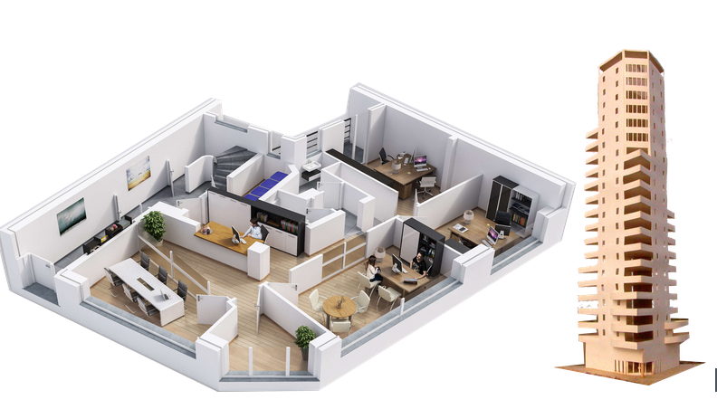<br><br>Aquests són els requisits de l'empresa:<br>• Llocs de treball: «recepció» (1 treballador/a), «administració» (2 treballadors) i «producció» (5 treballadors).<br>• Tots els departaments es troben a la mateixa xarxa.<br><br><b>Tria el diagrama lògic de l'empresa:</b>",
  "o": [
    "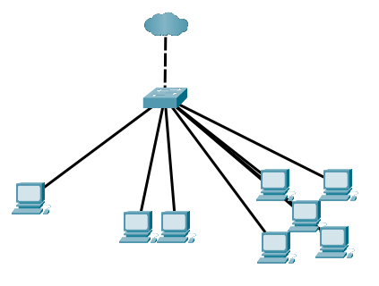",
    "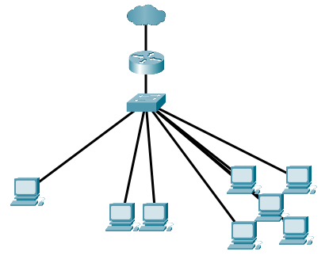",
    "",
    ""
  ],
  "a": 1,
  "e": "Com que tots els departaments es troben a la mateixa xarxa, només cal 1 switch connectat al router que dona sortida a Internet."
},

// --- PREGUNTA 2 ---
  {
    "id": "xl-u2q2",
    "q": "Quantes preses de xarxes s'han d'instal·lar a la planta 7a?<br>Recorda els requisits de l'empresa:<br>• Llocs de treball: «recepció» (1 treballador/a), «administració» (2 treballadors) i «producció» (5 treballadors).<br>• Tots els departaments es troben a la mateixa xarxa<br>i el seu diagrama lògic<br><br>",
    "o": [
      "8",
      "9",
      "16",
      "18"
    ],
    "a": 2,
    "e": "Explicació de la resposta correcta."
  },

  // --- PREGUNTA 3 ---
  {
    "id": "xl-u2q3",
    "q": "El diagrama lògic de l'empresa és el següent.<br>Indica quin és el rack que ens trobaríem a l'empresa.<br>Recorda que al rack arribaran 16 cables dels dispositius de la xarxa que acabaran en preses de xarxa de patch panel.<br><br>",
    "o": [
      "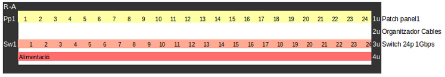",
      "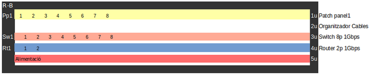",
      "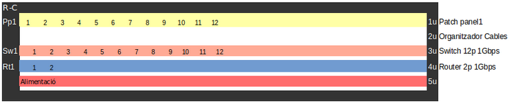",
      "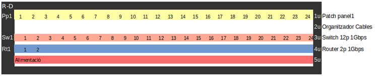"
    ],
    "a": 0,
    "e": "Explicació de la resposta correcta."
  },

// --- PREGUNTA 4 ---
  {
    "id": "xl-u2q4",
    "q": "Continuem amb l'empresa anterior, recordem que té com requisits:<br>• Llocs de treball: «recepció» (1 treballador/a), «administració» (2 treballadors) i «producció» (5 treballadors).<br>• Tots els departaments es troben a la mateixa xarxa.<br><br>Hem deduït que té el següent diagrama lògic:<br><br><br>I té el següent armari rack sense cablejar:<br><br><br>Les 16 primeres preses de Pp1 són per les rosetes dels PCs (cada PC té 2). (PC1-recepció té 2 preses de xarxa: Pp1.1 i PP1.9).<br>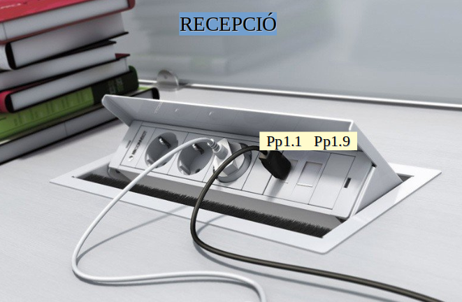<br><br>No posarem cablejat a les rosetes que no s'utilitzen; per tant, només ens caldrà posar 8 cables de xarxa, un per PC.<br><br><b>Indica com quedaria el rack una vegada l'hàgim cablejat:</b>",
    "o": [
      "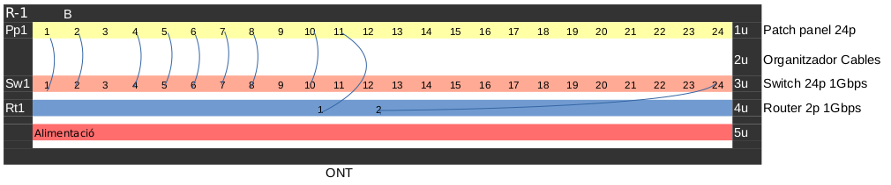",
      "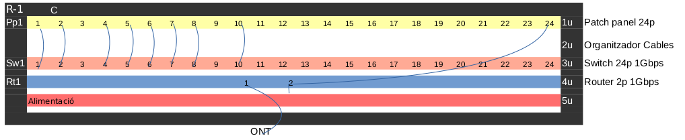",
      "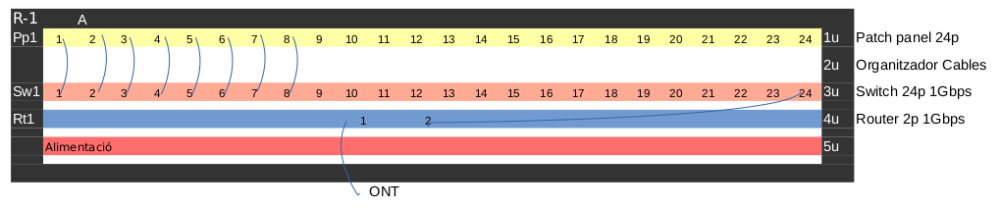"
    ],
    "a": 0,
    "e": "Explicació de la resposta correcta."
  },

// --- PREGUNTA 5 ---
  {
    "id": "xl-u2q5",
    "q": "Continuem amb la mateixa empresa,<br><br><br>Ens indica l'empresa el nou requisit:<br>• Llocs de treball: «recepció» (1 treballador/a), «administració» (2 treballadors) i «producció» (5 treballadors).<br>• Cada departament es troba a una xarxa diferent.<br><br><b>Tria el nou diagrama lògic de l'empresa:</b>",
    "o": [
      "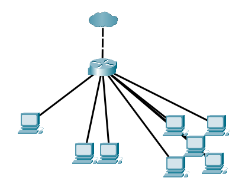",
      "",
      "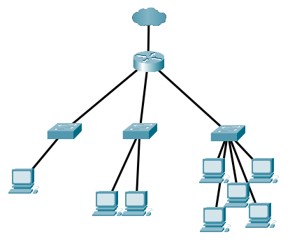",
      ""
    ],
    "a": 2,
    "e": "Observa que l'empresa tindrà 3 xarxes més la xarxa d'Internet."
  },

// --- PREGUNTA 6 ---
{
  "id": "xl-u2q6",
  "q": "Recordem els requisits de l'empresa:<br>• Llocs de treball: «recepció» (1 treballador/a), «administració» (2 treballadors) i «producció» (5 treballadors).<br>• Cada departament es troba a una xarxa diferent.<br><br>A partir del diagrama lògic de l'empresa,<br><br><br><b>Indica quin és el rack que ens trobaríem a l'empresa (hi ha més d'una resposta correcta):</b>",
  "o": [
    "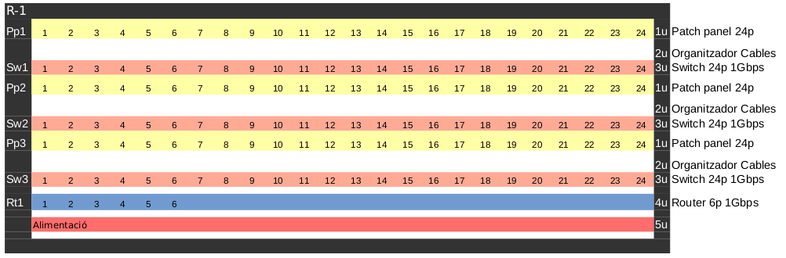",
    "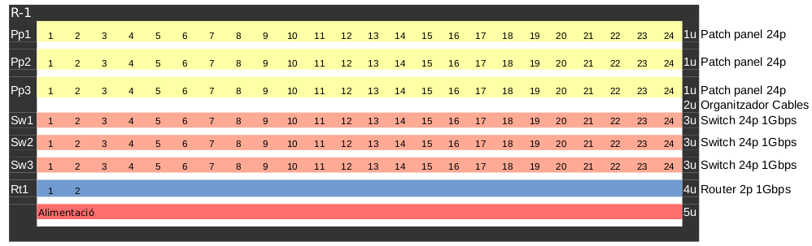",
    "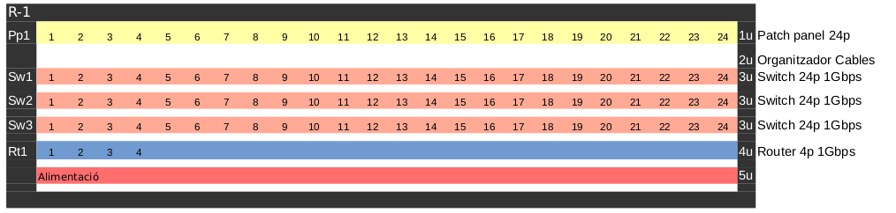"
  ],
  "a": [
    0,
    2
  ],
  "m": 1,
  "e": "Observa que el router ha de tenir, almenys, 3+1 preses de xarxa per poder fer les 4 xarxes demanades. Amb un sol patch panel n'hi hauria hagut prou (opció A); l'opció C també és vàlida, però seria millor separar els switch i el router dins del rack per millorar la refrigeració dels elements."
},

// --- PREGUNTA 7 ---
{
  "id": "xl-u2q7",
  "q": "Continuem amb l'empresa anterior, recordem que té com a requisits:<br>• Llocs de treball: «recepció» (1 treballador/a), «administració» (2 treballadors) i «producció» (5 treballadors).<br>• Cada departament es troba a una xarxa diferent.<br><br>Hem deduït que té el següent diagrama lògic:<br><br><br>I té el següent armari rack sense cablejar:<br><br><br>El cablejat horitzontal és el següent:<br>• Pp1.1 i Pp1.2 són les preses de xarxa del lloc de treball de recepció.<br>• Pp2.1 a Pp2.4 són les preses de xarxa dels llocs de treball d'administració.<br>• Pp3.1 a Pp3.10 són les preses de xarxa dels llocs de treball de producció (PC1 de producció té les preses de xarxa Pp3.1 i Pp3.6).<br><br><b>Indica com quedaria el rack una vegada l'hàgim cablejat:</b>",
  "o": [
    "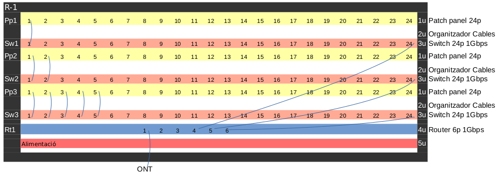",
    "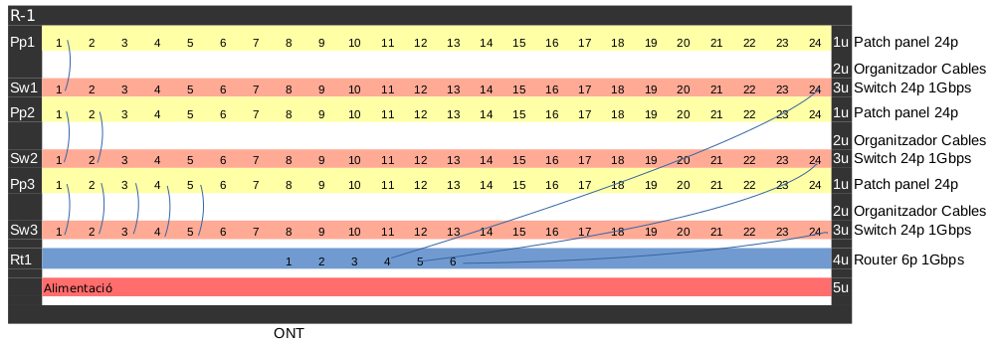",
    "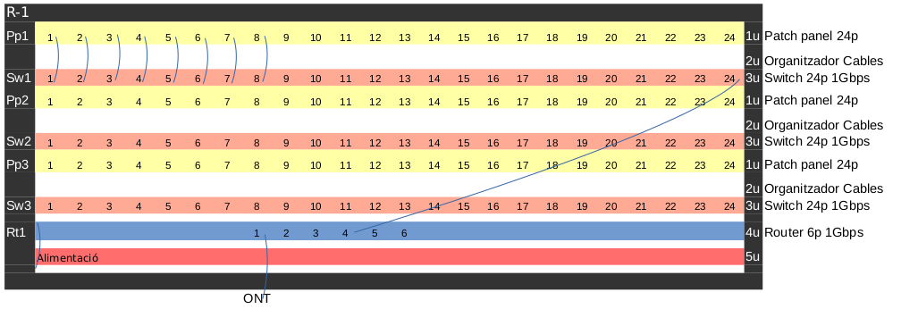"
  ],
  "a": 0,
  "e": "Cada patch panel (Pp1, Pp2, Pp3) es cableja amb el seu switch (Sw1, Sw2, Sw3), una roseta per lloc de treball. Després, cada switch es connecta al router (cablejat troncal) i el router a l'ONT."
},

// --- PREGUNTA 8 ---
{
  "id": "xl-u2q8",
  "q": "Continuem amb la mateixa empresa,<br><br><br>Ens indica l'empresa el nou requisit:<br>• Llocs de treball: «recepció» (1 treballador/a), «administració» (2 treballadors) i «producció» (5 treballadors).<br>• Cada departament es troba a una xarxa diferent.<br>• Tindrà wifi amb punts d'accés gestionats per un servidor-controlador. Tant els punts wifi com el controlador es troben a una xarxa diferent.<br><br><b>Tria el nou diagrama lògic de l'empresa:</b>",
  "o": [
    "",
    "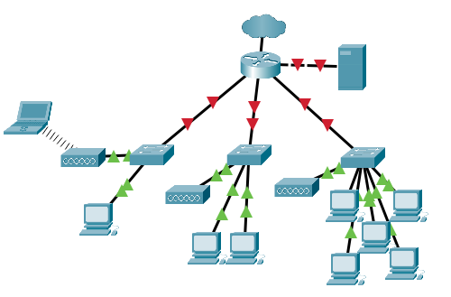",
    "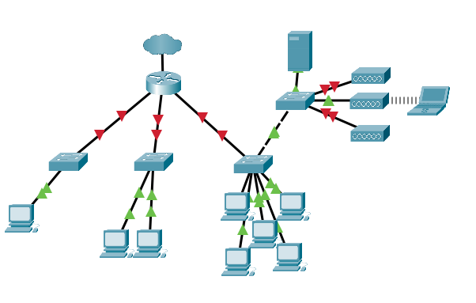"
  ],
  "a": 0,
  "e": "La xarxa wifi serà una xarxa nova i tots els dispositius de la xarxa wifi (punts wifi i controlador) han de connectar-se al switch de la xarxa wifi."
},

// --- PREGUNTA 9 ---
{
  "id": "xl-u2q9",
  "q": "A partir del diagrama lògic de l'empresa,<br>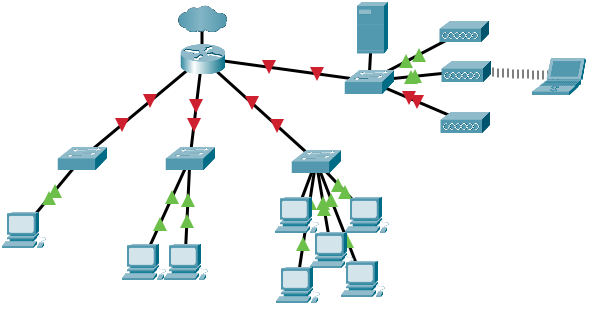<br><br><b>Indica quins dels següents racks ens podríem trobar a l'empresa</b> (hi ha més d'una resposta correcta).<br>Comentar que els punts wifi necessiten un switch PoE (els ports del switch donen dades i energia al punt wifi).",
  "o": [
    "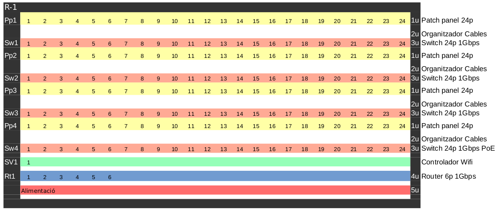",
    "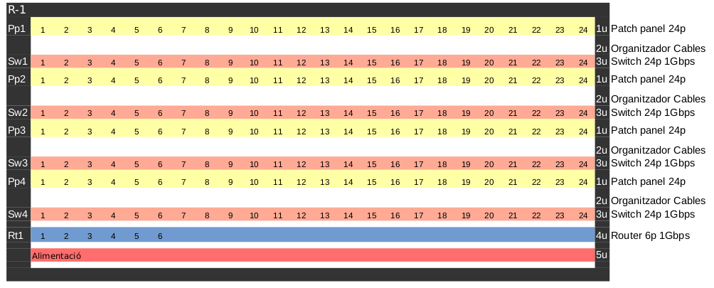",
    ""
  ],
  "a": [
    0,
    2
  ],
  "m": 1,
  "e": "Opció A: a cada switch li hem posat un patch panel. Opció C: aprofitem ports lliures del patch panel Pp3 per posar les preses de xarxa dels punts wifi. Recorda que el switch dels punts wifi ha de ser PoE."
},

// --- PREGUNTA 10 ---
{
  "id": "xl-u2q10",
  "q": "Continuem amb l'empresa anterior, recordem que té com requisits:<br>• Llocs de treball: «recepció» (1 treballador/a), «administració» (2 treballadors) i «producció» (5 treballadors).<br>• Cada departament es troba a una xarxa diferent.<br>• Tindrà wifi amb punts d'accés gestionats per un servidor-controlador. Tant els punts wifi com el controlador es troben a una xarxa diferent.<br><br>Hem deduït que té el següent diagrama lògic:<br><br><br>I té el següent armari rack sense cablejar:<br>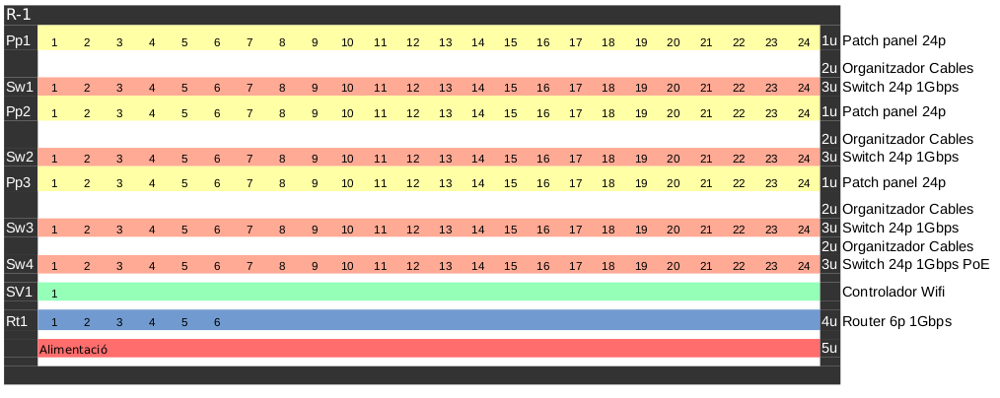<br><br>El cablejat horitzontal és el següent:<br>• Pp1.1 i Pp1.2 són les preses de xarxa del lloc de treball de recepció.<br>• Pp2.1 a Pp2.4 són les preses de xarxa dels llocs de treball d'administració.<br>• Pp3.1 a Pp3.10 són les preses de xarxa dels llocs de treball de producció.<br>• Pp3.11 a Pp3.13 són les preses de xarxa dels punts wifi.<br><br><b>Indica com quedaria el rack una vegada l'hàgim cablejat:</b>",
  "o": [
    "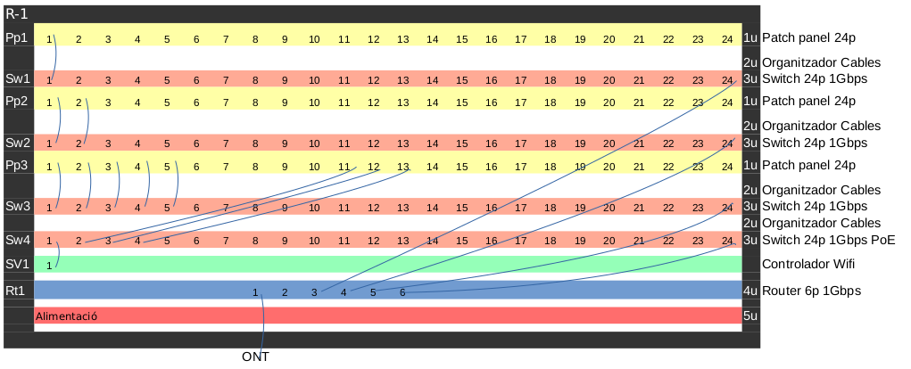",
    "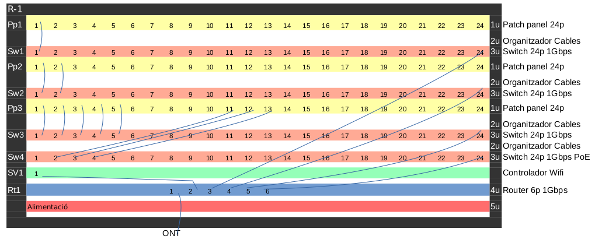",
    "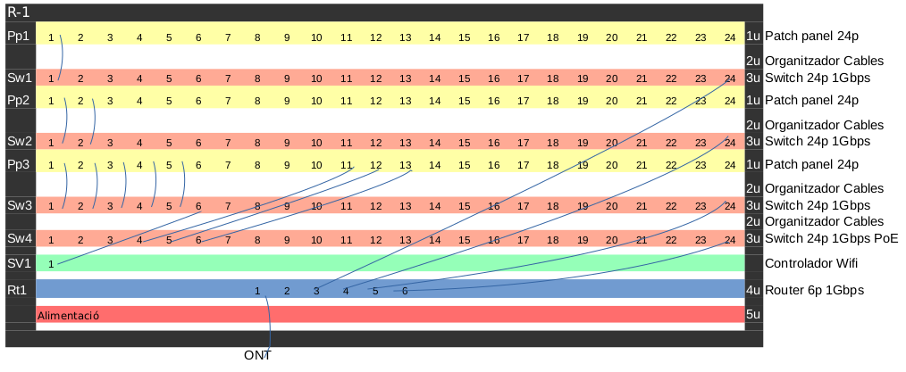"
  ],
  "a": 0,
  "e": "Els punts wifi (Pp3.11 a Pp3.13) i el controlador wifi (SV1) es connecten al switch PoE (Sw4), que forma la xarxa wifi; la resta de patch panels van cadascun al seu switch, i tots els switchos al router."
},

// --- PREGUNTA 11 ---
{
  "id": "xl-u2q11",
  "q": "Continuem amb la mateixa empresa,<br><br><br>L'empresa ha llogat una altra planta de l'edifici, la planta 8a.<br>Ens indica l'empresa la seva nova configuració de treballadors:<br>• Planta 7a.: «recepció» (1 treballador/a), «administració» (2 treballadors) i «producció» (5 treballadors).<br>• Planta 8a.: «producció» (10 treballadors).<br>• Cada departament es troba a una xarxa diferent.<br>• Tindrà wifi amb punts d'accés gestionats per un servidor-controlador. Tant els punts wifi com el controlador es troben a una xarxa diferent. A cada planta hi ha 3 punts wifi.<br><br><b>Tria el millor dels 3 possibles diagrames lògics de l'empresa proposats a continuació des del punt de vista d'ampliació de la xarxa i rendiment:</b>",
  "o": [
    "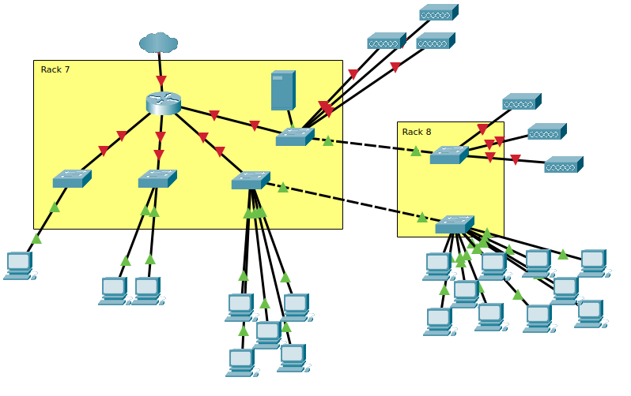",
    "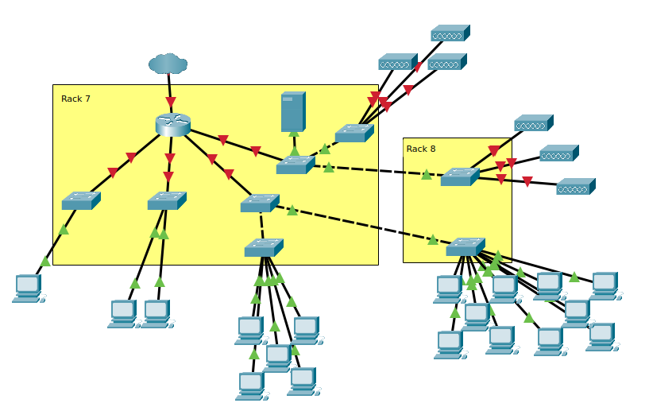",
    "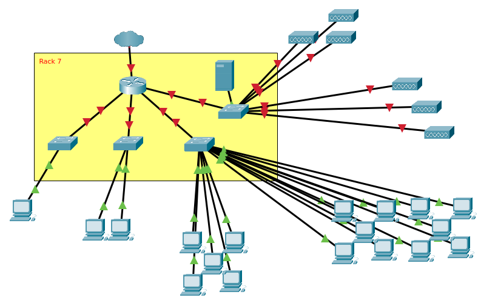"
  ],
  "a": 1,
  "e": "Recorda que quan hem de posar més d'un switch a la mateixa xarxa, és millor posar-los en forma d'arbre que en bus, per tal d'igualar el rendiment de tots els elements.<br>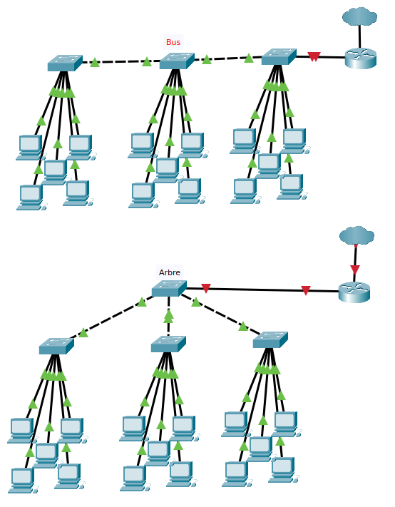"
},

// --- PREGUNTA 12 ---
{
  "id": "xl-u2q12",
  "q": "A partir del diagrama lògic de l'empresa,<br><br><br><b>Indica quin dels següents racks ens podríem trobar a l'empresa.</b><br>Comentar que els punts wifi necessiten un switch PoE (els ports del switch donen dades i energia al punt wifi).",
  "o": [
    "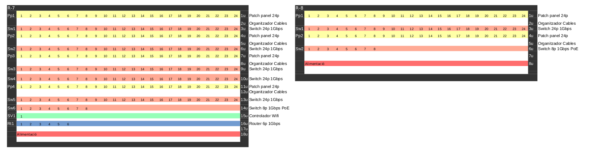",
    "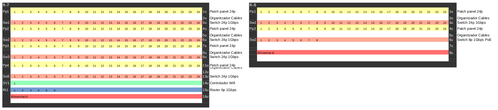",
    "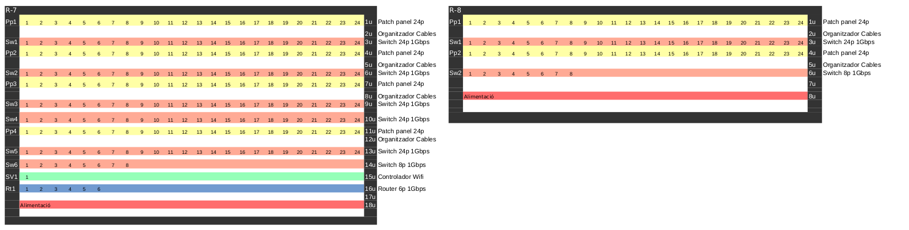"
  ],
  "a": 0,
  "e": "Cada rack (planta 7a i planta 8a) ha de portar un switch PoE de 8 ports per als 3 punts wifi de la seva planta."
},

// --- PREGUNTA 13 ---
{
  "id": "xl-u2q13",
  "q": "Continuem amb l'empresa anterior, recordem que té com requisits:<br>• Planta 7a.: «recepció» (1 treballador/a), «administració» (2 treballadors) i «producció» (5 treballadors).<br>• Planta 8a.: «producció» (10 treballadors).<br>• Cada departament es troba a una xarxa diferent.<br>• Tindrà wifi amb punts d'accés gestionats per un servidor-controlador. Tant els punts wifi com el controlador es troben a una xarxa diferent. A cada planta hi ha 3 punts wifi.<br><br>Hem deduït que té el següent diagrama lògic:<br>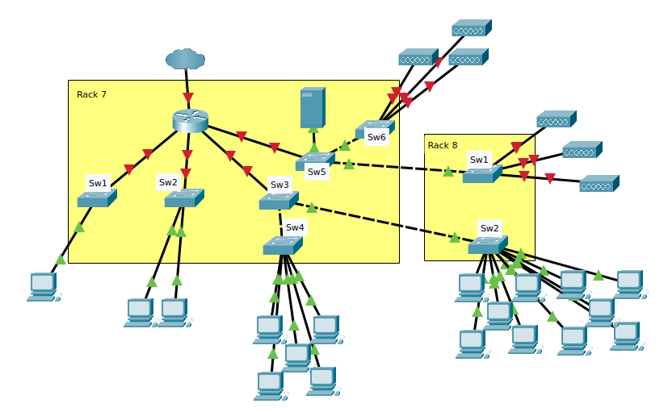<br><br>I té els següents armaris de racks sense cablejar a la planta 7a i a la planta 8a:<br><br><br>El cablejat troncal és el següent:<br>• R7.Pp3.24 - R8.Pp1.24 - Producció<br>• R7.Pp5.24 - R8.Pp2.24 - Wifi<br>• R7.Sw3 Troncal de xarxa Producció<br>• R7.Sw5 Troncal de xarxa Wifi<br>• Cablejat blau - dintre del rack<br>• Cablejat vermell - canalitzacions entre racks<br><br><b>Indica com quedaria el cablejat troncal de la xarxa als racks una vegada l'hàgim cablejat:</b>",
  "o": [
    "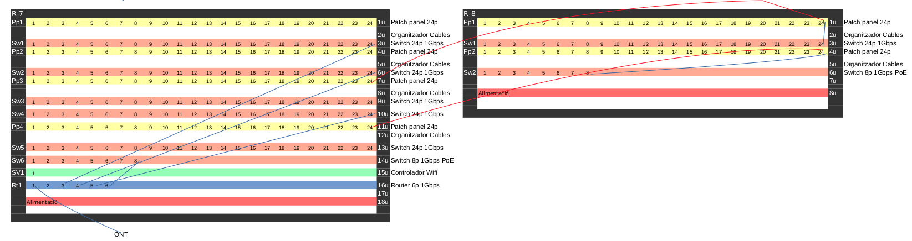",
    "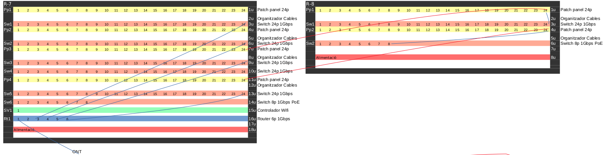",
    "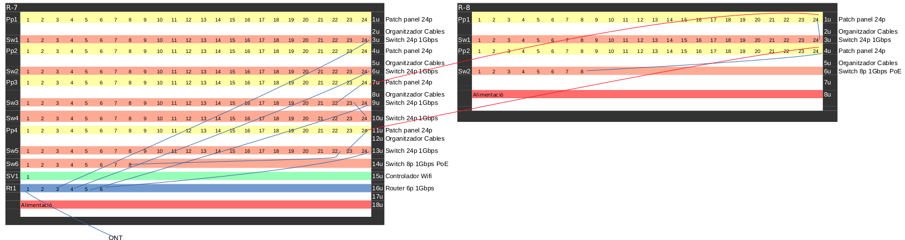"
  ],
  "a": 2,
  "e": "El cablejat troncal entre racks (vermell) uneix R7.Pp3.24 amb R8.Pp1.24 (producció) i R7.Pp5.24 amb R8.Pp2.24 (wifi); dins de cada rack (blau) els switchos de troncal Sw3 i Sw5 es connecten als seus patch panels."
},

// --- PREGUNTA 14 ---
{
  "id": "xl-u2q14",
  "q": "Donada la següent oficina<br><br><br>Quina de les següents instal·lacions de rejibands sota terra tècnic és la més adient i econòmica per portar cablejat des del rack a l'habitació d'oficines?<br>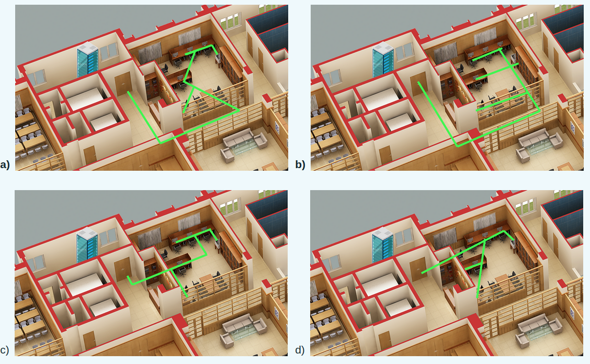",
  "o": [
    "a)",
    "b)",
    "c)",
    "d)"
  ],
  "a": 1,
  "e": "Recorda que les rejibands al terra tècnic han de passar per sota les portes (no per sota parets) i evitar les diagonals al terra."
}
]},

{n:"Unitat 3 - Model OSI, protocols de xarxa i adreçament IPv4",qs:[

// --- PREGUNTA 1, UNITAT 3, XARXES LOCALS ---
{"id": "xl-eac31q1", "q": "El protocol POP3 té assignat un port...", "o": ["Registrat", "Conegut", "Privat"], "a": 1, "e": "POP3 utilitza el port 110, que està dins del rang de ports coneguts (0–1023)."},

// --- PREGUNTA 2, UNITAT 3, XARXES LOCALS ---
{"id": "xl-eac31q2", "q": "En quina capa del model OSI funcionen les VLANs?", "o": ["Transport", "Aplicació", "Enllaç de Dades"], "a": 2, "e": "Les VLANs segmenten el domini de broadcast als commutadors, que treballen a la capa 2 (Enllaç de Dades)."},

// --- PREGUNTA 3, UNITAT 3, XARXES LOCALS ---
{"id": "xl-eac31q3", "q": "Amb quina capa del model OSI relacionaries un concentrador?", "o": ["Enllaç", "Física", "Xarxa"], "a": 1, "e": "Un concentrador (hub) només regenera i repeteix el senyal elèctric: capa 1 (Física)."},

// --- PREGUNTA 4, UNITAT 3, XARXES LOCALS ---
{"id": "xl-eac31q4", "q": "Quin protocol de la capa de transport faríem servir si necessitem fiabilitat?", "o": ["UDP", "IP", "TCP"], "a": 2, "e": "TCP és orientat a connexió i ofereix confirmacions i retransmissions; UDP no és fiable i IP és de capa de xarxa."},

// --- PREGUNTA 5, UNITAT 3, XARXES LOCALS ---
{"id": "xl-eac31q5", "q": "Quins tipus de col·lisió poden detectar-se per una FCS errònia ?", "o": ["Local i remota", "Endarrerida", "Remota i endarrerida"], "a": 2, "e": "Les col·lisions remotes i les endarrerides (late) es detecten al receptor perquè la trama arriba amb la FCS errònia."},

// --- PREGUNTA 6, UNITAT 3, XARXES LOCALS ---
{"id": "xl-eac31q6", "q": "Amb quina capa del model OSI relacionaries l'adreça IP?", "o": ["Xarxa", "Transport", "Enllaç"], "a": 0, "e": "L'adreça IP és l'adreça lògica de la capa 3 (Xarxa)."},

// --- PREGUNTA 7, UNITAT 3, XARXES LOCALS ---
{"id": "xl-eac31q7", "q": "Quin és el propòsit principal de la capa de xarxa?", "o": ["Rutejar paquets entre xarxes", "Xifratge de dades", "Control de flux de dades"], "a": 0},

// --- PREGUNTA 8, UNITAT 3, XARXES LOCALS ---
{"id": "xl-eac31q8", "q": "Quin és el propòsit dels ports efímers?", "o": ["Comunicacions segures", "Resolució de noms de domini", "Comunicacions temporals"], "a": 2, "e": "Els ports efímers els assigna el sistema operatiu al client de manera temporal durant una comunicació."},

// --- PREGUNTA 9, UNITAT 3, XARXES LOCALS ---
{"id": "xl-eac31q9", "q": "L'adreça 192.168.10.255 és una adreça de…?", "o": ["Unicast", "Multicast", "Broadcast"], "a": 2, "e": "Amb la màscara habitual d'una classe C (/24), el darrer octet a 255 és l'adreça de broadcast de la xarxa."},

// --- PREGUNTA 10, UNITAT 3, XARXES LOCALS ---
{"id": "xl-eac31q10", "q": "Quin protocol ens permet descobrir la IP a partir de l'adreça MAC?", "o": ["ARP", "CSMA/CD", "RARP"], "a": 2, "e": "RARP fa el camí invers d'ARP: a partir de la MAC obté la IP."},

// --- PREGUNTA 11, UNITAT 3, XARXES LOCALS ---
{"id": "xl-eac31q11", "q": "Quina és la màxima longitud d'un càble Ethernet cat 5?", "o": ["200 metres", "100 metres", "50 metres"], "a": 1},

// --- PREGUNTA 12, UNITAT 3, XARXES LOCALS ---
{"id": "xl-eac31q12", "q": "50.000 és un port...", "o": ["Coneguts", "Registrats", "Dinàmics"], "a": 2, "e": "Coneguts: 0–1023 · Registrats: 1024–49151 · Dinàmics/privats: 49152–65535."},

// --- PREGUNTA 13, UNITAT 3, XARXES LOCALS ---
{"id": "xl-eac31q13", "q": "10.000 és un port...", "o": ["Registrats", "Dinàmics", "Coneguts"], "a": 0, "e": "Coneguts: 0–1023 · Registrats: 1024–49151 · Dinàmics/privats: 49152–65535."},

// --- PREGUNTA 14, UNITAT 3, XARXES LOCALS ---
{"id": "xl-eac31q14", "q": "Relaciona les següents ordres o comandes amb les seves funcions", "h": "<p>Relaciona les següents ordres o comandes amb les seves funcions:</p><table><tr><td>arp -a</td><td>{{0}}</td></tr><tr><td>ipconfig /renew</td><td>{{1}}</td></tr><tr><td>ipconfig /release</td><td>{{2}}</td></tr><tr><td>ping</td><td>{{3}}</td></tr><tr><td>traceroute</td><td>{{4}}</td></tr><tr><td>netstat</td><td>{{5}}</td></tr><tr><td>ifconfig</td><td>{{6}}</td></tr><tr><td>ipconfig</td><td>{{7}}</td></tr></table>", "p": [{"k": "s", "o": ["Conèixer la ruta que segueix un paquet fins a la seva destinació en GNU/Linux", "Alliberar l'adreça IP pròpia en Windows", "Veure les connexions TCP/IP establertes", "Conèixer l'adreça IP pròpia en Windows", "Visualitzar la taula amb IPs i MACs associades", "Comprovar connectivitat entre dos hosts", "Conèixer les adreces IP i MAC pròpies en GNU/Linux", "Demanar una nova adreça IP en Windows"], "a": 4}, {"k": "s", "o": ["Conèixer la ruta que segueix un paquet fins a la seva destinació en GNU/Linux", "Alliberar l'adreça IP pròpia en Windows", "Veure les connexions TCP/IP establertes", "Conèixer l'adreça IP pròpia en Windows", "Visualitzar la taula amb IPs i MACs associades", "Comprovar connectivitat entre dos hosts", "Conèixer les adreces IP i MAC pròpies en GNU/Linux", "Demanar una nova adreça IP en Windows"], "a": 7}, {"k": "s", "o": ["Conèixer la ruta que segueix un paquet fins a la seva destinació en GNU/Linux", "Alliberar l'adreça IP pròpia en Windows", "Veure les connexions TCP/IP establertes", "Conèixer l'adreça IP pròpia en Windows", "Visualitzar la taula amb IPs i MACs associades", "Comprovar connectivitat entre dos hosts", "Conèixer les adreces IP i MAC pròpies en GNU/Linux", "Demanar una nova adreça IP en Windows"], "a": 1}, {"k": "s", "o": ["Conèixer la ruta que segueix un paquet fins a la seva destinació en GNU/Linux", "Alliberar l'adreça IP pròpia en Windows", "Veure les connexions TCP/IP establertes", "Conèixer l'adreça IP pròpia en Windows", "Visualitzar la taula amb IPs i MACs associades", "Comprovar connectivitat entre dos hosts", "Conèixer les adreces IP i MAC pròpies en GNU/Linux", "Demanar una nova adreça IP en Windows"], "a": 5}, {"k": "s", "o": ["Conèixer la ruta que segueix un paquet fins a la seva destinació en GNU/Linux", "Alliberar l'adreça IP pròpia en Windows", "Veure les connexions TCP/IP establertes", "Conèixer l'adreça IP pròpia en Windows", "Visualitzar la taula amb IPs i MACs associades", "Comprovar connectivitat entre dos hosts", "Conèixer les adreces IP i MAC pròpies en GNU/Linux", "Demanar una nova adreça IP en Windows"], "a": 0}, {"k": "s", "o": ["Conèixer la ruta que segueix un paquet fins a la seva destinació en GNU/Linux", "Alliberar l'adreça IP pròpia en Windows", "Veure les connexions TCP/IP establertes", "Conèixer l'adreça IP pròpia en Windows", "Visualitzar la taula amb IPs i MACs associades", "Comprovar connectivitat entre dos hosts", "Conèixer les adreces IP i MAC pròpies en GNU/Linux", "Demanar una nova adreça IP en Windows"], "a": 2}, {"k": "s", "o": ["Conèixer la ruta que segueix un paquet fins a la seva destinació en GNU/Linux", "Alliberar l'adreça IP pròpia en Windows", "Veure les connexions TCP/IP establertes", "Conèixer l'adreça IP pròpia en Windows", "Visualitzar la taula amb IPs i MACs associades", "Comprovar connectivitat entre dos hosts", "Conèixer les adreces IP i MAC pròpies en GNU/Linux", "Demanar una nova adreça IP en Windows"], "a": 6}, {"k": "s", "o": ["Conèixer la ruta que segueix un paquet fins a la seva destinació en GNU/Linux", "Alliberar l'adreça IP pròpia en Windows", "Veure les connexions TCP/IP establertes", "Conèixer l'adreça IP pròpia en Windows", "Visualitzar la taula amb IPs i MACs associades", "Comprovar connectivitat entre dos hosts", "Conèixer les adreces IP i MAC pròpies en GNU/Linux", "Demanar una nova adreça IP en Windows"], "a": 3}]},

// --- PREGUNTA 15, UNITAT 3, XARXES LOCALS ---
{"id": "xl-eac31q15", "q": "L'adreça IPv6 està formada per:", "o": ["128 bits", "32 bits", "48 bits"], "a": 0},

// --- PREGUNTA 16, UNITAT 3, XARXES LOCALS ---
{"id": "xl-eac31q16", "q": "Quin és el rang d'adreces IP privades en la classe C?", "o": ["192.168.0.0 - 192.168.255.255", "10.0.0.0 - 10.255.255.255", "172.16.0.0 - 172.31.255.255"], "a": 0, "e": "10.0.0.0/8 és la classe A privada, 172.16.0.0–172.31.255.255 la B i 192.168.0.0/16 la C."},

// --- PREGUNTA 17, UNITAT 3, XARXES LOCALS ---
{"id": "xl-eac31q17", "q": "Quin protocol es fa servir per transferir arxius entre ordinadors?", "o": ["HTTP", "SMTP", "FTP"], "a": 2},

// --- PREGUNTA 18, UNITAT 3, XARXES LOCALS ---
{"id": "xl-eac31q18", "q": "Quina de les següents afirmacions és falsa?", "o": ["Finestra lliscant i stop-and-wait són dos mètodes de control de flux", "Finestra lliscant confirma un nombre fix de paquets", "Stop-and-wait confirma els paquets d'un en un i això no és eficient"], "a": 1},

// --- PREGUNTA 19, UNITAT 3, XARXES LOCALS ---
{"id": "xl-eac31q19", "q": "Si una empresa vol connectar-se amb l’exterior fent servir només una IP pública farà servir...?", "o": ["NAT estàtic", "PAT", "NAT dinàmic"], "a": 1, "e": "PAT (NAT amb sobrecàrrega) permet que moltes IPs privades surtin amb una sola IP pública diferenciant-les per port."},

// --- PREGUNTA 20, UNITAT 3, XARXES LOCALS ---
{"id": "xl-eac31q20", "q": "Amb quina capa del model OSI cal relacionar una VLAN?", "o": ["Xarxa", "Física", "Enllaç"], "a": 2},

// --- PREGUNTA 21, UNITAT 3, XARXES LOCALS ---
{"id": "xl-eac32q1", "q": "Quina de les següents és l'adreça de xarxa a la qual pertany la IP 222.21.2.130/25?", "o": ["222.21.2.128", "222.21.2.0", "222.21.2.1", "222.21.2.192"], "a": 0, "e": "Amb /25 els blocs són de 128 adreces: 0–127 i 128–255. El 130 és al bloc que comença a 128."},

// --- PREGUNTA 22, UNITAT 3, XARXES LOCALS ---
{"id": "xl-eac32q2", "q": "De quina classe és l'adreça 192.168.1.1?", "o": ["Classe B", "Classe C", "Classe A"], "a": 1, "e": "Classe A: 1–126 · B: 128–191 · C: 192–223 · D: 224–239."},

// --- PREGUNTA 23, UNITAT 3, XARXES LOCALS ---
{"id": "xl-eac32q3", "q": "255.255.255.0 en notació CIDR:", "o": ["/3", "/8", "/16", "/24"], "a": 3, "e": "3 octets a 255 = 24 bits a 1."},

// --- PREGUNTA 24, UNITAT 3, XARXES LOCALS ---
{"id": "xl-eac32q4", "q": "200.34.96.254/24 és una adreça de...", "o": ["Host", "Xarxa", "Broadcast"], "a": 0, "e": "Amb /24, .0 és la xarxa i .255 el broadcast; .254 és un host."},

// --- PREGUNTA 25, UNITAT 3, XARXES LOCALS ---
{"id": "xl-eac32q5", "q": "De quina classe és l'adreça 9.255.255.255?", "o": ["Classe B", "Classe C", "Classe A"], "a": 2, "e": "El primer octet (9) és entre 1 i 126: classe A."},

// --- PREGUNTA 26, UNITAT 3, XARXES LOCALS ---
{"id": "xl-eac32q6", "q": "De quina classe és l'adreça 53.248.21.0?", "o": ["A", "C", "D", "B"], "a": 0, "e": "El primer octet (53) és entre 1 i 126: classe A."},

// --- PREGUNTA 27, UNITAT 3, XARXES LOCALS ---
{"id": "xl-eac32q7", "q": "De quina classe és l'adreça 212.127.1.0?", "o": ["Clase A", "Clase D", "Clase B", "Clase C"], "a": 3, "e": "El primer octet (212) és entre 192 i 223: classe C."},

// --- PREGUNTA 28, UNITAT 3, XARXES LOCALS ---
{"id": "xl-eac32q8", "q": "Quina és la notació CIDR per a la màscara de xarxa 255.255.255.252?", "o": ["/30", "/29", "/32", "/31"], "a": 0, "e": "252 = 11111100 → 6 bits a 1 al darrer octet: 24 + 6 = 30."},

// --- PREGUNTA 29, UNITAT 3, XARXES LOCALS ---
{"id": "xl-eac32q9", "q": "L'adreça 4.223.222.221 es de clase", "o": ["C", "D", "B", "A"], "a": 3, "e": "El primer octet (4) és entre 1 i 126: classe A."},

// --- PREGUNTA 30, UNITAT 3, XARXES LOCALS ---
{"id": "xl-eac32q10", "q": "255.255.192.0 en notació CIDR:", "o": ["No existe", "/16", "/20", "/18"], "a": 3, "e": "192 = 11000000 → 2 bits a 1 al tercer octet: 16 + 2 = 18."},

// --- PREGUNTA 31, UNITAT 3, XARXES LOCALS ---
{"id": "xl-eac32q11", "q": "Quants bits té una direcció IPv4?", "o": ["14", "128", "16", "32"], "a": 3},

// --- PREGUNTA 32, UNITAT 3, XARXES LOCALS ---
{"id": "xl-eac32q12", "q": "Quina és la notació CIDR per a la màscara de xarxa 255.255.255.224?", "o": ["/25", "/27", "/26", "/28"], "a": 1, "e": "224 = 11100000 → 3 bits a 1 al darrer octet: 24 + 3 = 27."},

// --- PREGUNTA 33, UNITAT 3, XARXES LOCALS ---
{"id": "xl-eac32q13", "q": "Quina de les següents és l'adreça de broadcast a la qual pertany aquesta IP 8.8.5.5/8?", "o": ["8.8.255.255", "8.255.255.255", "8.127.255.255"], "a": 1, "e": "Amb /8 només es fixa el primer octet; tots els bits de host a 1 donen 8.255.255.255."},

// --- PREGUNTA 34, UNITAT 3, XARXES LOCALS ---
{"id": "xl-eac32q14", "q": "Quina és la notació CIDR per a la màscara de xarxa 255.255.252.0?", "o": ["/21", "/24", "/22", "/23"], "a": 2, "e": "252 = 11111100 → 6 bits a 1 al tercer octet: 16 + 6 = 22."},

// --- PREGUNTA 35, UNITAT 3, XARXES LOCALS ---
{"id": "xl-eac32q15", "q": "La IP 203.0.113.5, pertany a la Xarxa 203.0.113.0/26?", "o": ["True", "False"], "a": 0, "e": "/26 → blocs de 64 adreces. La xarxa 203.0.113.0/26 va del .0 al .63, i el .5 hi és."},

// --- PREGUNTA 36, UNITAT 3, XARXES LOCALS ---
{"id": "xl-eac32q16", "q": "Número de hosts que es poden direccionar amb 8 bits", "o": ["8", "16", "255", "254"], "a": 3, "e": "2^8 − 2 = 254 (es resten l'adreça de xarxa i la de broadcast)."},

// --- PREGUNTA 37, UNITAT 3, XARXES LOCALS ---
{"id": "xl-eac32q17", "q": "Quina és la notació CIDR per a la màscara de xarxa 255.255.0.0?", "o": ["/16", "/8", "/24", "/32"], "a": 0},

// --- PREGUNTA 38, UNITAT 3, XARXES LOCALS ---
{"id": "xl-eac32q18", "q": "Quantes adreces possibles té l'adreçament IPv4?", "o": ["2^16", "2^32", "2^24", "2^128"], "a": 1},

// --- PREGUNTA 39, UNITAT 3, XARXES LOCALS ---
{"id": "xl-eac32q19", "q": "210.65.4.0/24 és una adreça de...", "o": ["Xarxa", "Broadcast", "Host"], "a": 0, "e": "Amb /24, el darrer octet a 0 és l'adreça de xarxa."},

// --- PREGUNTA 40, UNITAT 3, XARXES LOCALS ---
{"id": "xl-eac32q20", "q": "De quina classe és l'adreça 172.16.0.0?", "o": ["Clase A", "Clase B", "Clase D", "Clase C"], "a": 1, "e": "El primer octet (172) és entre 128 i 191: classe B."},

// --- PREGUNTA 41, UNITAT 3, XARXES LOCALS ---
{"id": "xl-eac32q21", "q": "La IP 140.112.174.32, pertany a la Xarxa 140.112.160.0/20?", "o": ["False", "True"], "a": 1, "e": "/20 → blocs de 16 al tercer octet. La xarxa 160.0/20 va del 160 al 175, i el 174 hi és."},

// --- PREGUNTA 42, UNITAT 3, XARXES LOCALS ---
{"id": "xl-eac32q22", "q": "A quina xarxa pertany la IP 67.25.12.133/26?", "o": ["67.25.12.0/24", "67.25.12.128/26", "67.25.12.0/26", "67.25.12.192/26"], "a": 1, "e": "/26 → blocs de 64: 0, 64, 128, 192. El 133 és al bloc que comença al 128."},

// --- PREGUNTA 43, UNITAT 3, XARXES LOCALS ---
{"id": "xl-eac32q23", "q": "145.9.0.255/16 és una adreça de...", "o": ["Xarxa", "Host", "Broadcast"], "a": 1, "e": "Amb /16 el broadcast és 145.9.255.255; 145.9.0.255 és un host."},

// --- PREGUNTA 44, UNITAT 3, XARXES LOCALS ---
{"id": "xl-eac32q24", "q": "La IP 172.31.100.5, pertany a la Xarxa 172.31.96.0/20?", "o": ["False", "True"], "a": 1, "e": "/20 → blocs de 16 al tercer octet. La xarxa 96.0/20 va del 96 al 111, i el 100 hi és."},

// --- PREGUNTA 45, UNITAT 3, XARXES LOCALS ---
{"id": "xl-eac32q25", "q": "De quina classe és l'adreça 203.0.113.0?", "o": ["Classe C", "Classe A", "Classe B"], "a": 0, "e": "El primer octet (203) és entre 192 i 223: classe C."},

// --- PREGUNTA 46, UNITAT 3, XARXES LOCALS ---
{"id": "xl-eac32q26", "q": "130.25.0.0/16 és una adreça de...", "o": ["Host", "Broadcast", "Xarxa"], "a": 2, "e": "Amb /16, els dos darrers octets a 0 són l'adreça de xarxa."},

// --- PREGUNTA 47, UNITAT 3, XARXES LOCALS ---
{"id": "xl-eac32q27", "q": "255.255.255.254 en notació CIDR:", "o": ["No existe", "/8", "/28", "/18"], "a": 0, "e": "255.255.255.254 correspondria a /31, que no apareix entre les opcions."},

// --- PREGUNTA 48, UNITAT 3, XARXES LOCALS ---
{"id": "xl-eac32q28", "q": "De quina classe és l'adreça 191.255.255.255?", "o": ["Classe B", "Classe C", "Classe A"], "a": 0, "e": "El primer octet (191) és entre 128 i 191: classe B."},

// --- PREGUNTA 49, UNITAT 3, XARXES LOCALS ---
{"id": "xl-eac32q29", "q": "Amb quina màscara es correspon /23?", "o": ["255.255.254.0", "255.255.255.192", "255.255.252.0", "255.255.255.0"], "a": 0, "e": "/23 = 16 + 7 bits → tercer octet 11111110 = 254."},

// --- PREGUNTA 50, UNITAT 3, XARXES LOCALS ---
{"id": "xl-eac32q30", "q": "La IP 10.10.10.10, pertany a la Xarxa 10.10.10.0/24?", "o": ["False", "True"], "a": 1}
]}
]}
];
var BANKS=[];SUBJECTS.forEach(function(su){su.units.forEach(function(u){u.s=su.n;BANKS.push(u)})});

// ====== ESTAT I EMMAGATZEMATGE ======
var cfg={sub:'all',unit:'all',mode:'study',rnd:true};var KEY='errorsBank_v2',S={},app=document.getElementById('app');
function ld(){try{return JSON.parse(localStorage.getItem(KEY))||[]}catch(e){return []}}
function sv(a){try{localStorage.setItem(KEY,JSON.stringify(a))}catch(e){}}
function mem(a){S.mem=a}
var errs=ld();
function addErr(id){if(errs.indexOf(id)<0){errs.push(id);sv(errs)}}
function rmErr(id){errs=errs.filter(function(x){return x!==id});sv(errs)}
function all(){return BANKS.reduce(function(a,b){return a.concat(b.qs)},[])}
function scope(){
  if(cfg.sub=='all')return all();
  var su=SUBJECTS[cfg.sub];
  if(cfg.unit=='all')return su.units.reduce(function(a,u){return a.concat(u.qs)},[]);
  return su.units[cfg.unit].qs;
}
function unitOf(id){var b=BANKS.filter(function(b){return b.qs.some(function(q){return q.id===id})})[0];return b.s+' › '+b.n}
function byId(id){return all().filter(function(q){return q.id===id})[0]}
function shuf(a){a=a.slice();for(var i=a.length-1;i>0;i--){var j=Math.floor(Math.random()*(i+1));var t=a[i];a[i]=a[j];a[j]=t}return a}
// ====== PANTALLA D'INICI ======
function home(){
  var n=errs.filter(byId).length,sc=scope().map(function(q){return q.id}),ns=errs.filter(function(id){return sc.indexOf(id)>=0}).length;
  var so='<option value="all">Totes les matèries</option>'+SUBJECTS.map(function(x,i){var c=x.units.reduce(function(t,u){return t+u.qs.length},0);return '<option value="'+i+'"'+(cfg.sub==i?' selected':'')+'>'+x.n+' ('+c+')</option>'}).join('');
  var uo=cfg.sub=='all'?'':'<option value="all">Totes les unitats</option>'+SUBJECTS[cfg.sub].units.map(function(u,i){return '<option value="'+i+'"'+(cfg.unit==i?' selected':'')+'>'+u.n+' ('+u.qs.length+')</option>'}).join('');
  var empty=!scope().length;
  var ps=ses();app.innerHTML='<h1>Tests d’estudi</h1>'+(ps?pausedCard(ps):'')+
  '<div class="card"><h2>Matèria</h2><select id="sb">'+so+'</select>'+(cfg.sub=='all'?'':'<h2 style="margin-top:14px">Unitat</h2><select id="un">'+uo+'</select>')+(empty?'<p class="mu">Aquesta selecció encara no té preguntes.</p>':'')+'</div>'+
  '<div class="card"><h2>Carpeta d’errors</h2><div class="big">'+n+'</div><div class="mu">Carpeta d’Errors: '+n+' preguntes</div>'+BANKS.map(function(b){var c=b.qs.filter(function(q){return errs.indexOf(q.id)>=0}).length;return c?'<div class="mu">'+b.s+' › '+b.n+': '+c+'</div>':''}).join('')+
  '<div class="row"><button class="p" id="rv"'+(ns?'':' disabled')+'>Repassar només els errors'+(cfg.sub=='all'?'':(cfg.unit=='all'?' d’aquesta matèria':' d’aquesta unitat'))+' ('+ns+')</button></div></div>'+
  '<div class="card"><h2>Mode</h2>'+
  '<label><input type="radio" name="md" value="study"'+(cfg.mode=='study'?' checked':'')+'> Mode Estudi <span class="mu">— correcció immediata</span></label>'+
  '<label><input type="radio" name="md" value="exam"'+(cfg.mode=='exam'?' checked':'')+'> Mode Examen <span class="mu">— nota final sobre 10</span></label>'+
  '<label style="margin-top:12px"><input type="checkbox" id="rn"'+(cfg.rnd?' checked':'')+'> Ordre aleatori (preguntes i opcions A–E)</label></div>'+
  '<button class="p" id="go" style="width:100%;padding:14px"'+(empty?' disabled':'')+'>Començar</button>'+tools();
  document.getElementById('sb').onchange=function(){cfg.sub=this.value;cfg.unit='all';home()};
  var un=document.getElementById('un');if(un)un.onchange=function(){cfg.unit=this.value;home()};
  document.querySelectorAll('[name=md]').forEach(function(r){r.onchange=function(){cfg.mode=this.value}});
  document.getElementById('rn').onchange=function(){cfg.rnd=this.checked};
  document.getElementById('go').onclick=function(){newT(this,scope(),false)};
  document.getElementById('rv').onclick=function(){newT(this,scope().filter(function(q){return errs.indexOf(q.id)>=0}),true)};
  bindTools(home);
  var rs=document.getElementById('rs');if(rs){rs.onclick=resume;document.getElementById('ds').onclick=function(){var b=this;sure(b,function(){clr();home()})}}
}
// ====== MOTOR ======
var SKEY='quizSession_v1';
function sure(b,f){if(b.dataset.s)f();else{b.dataset.s=1;b.textContent='Segur? Clica de nou'}}
function newT(b,qs,rev){if(ses()&&!b.dataset.s){b.dataset.s=1;b.textContent='Hi ha un test en pausa que es perdrà. Clica de nou per continuar';return}start(qs,rev)}
function elapsed(){return S.el+Date.now()-S.t0}
function dn(s){return Array.isArray(s)||s>=0}
function pok(p,v){
  if(v===undefined||v==='')return false;
  if(p.k=='s'){var a=Array.isArray(p.a)?p.a:[p.a];return a.indexOf(+v)>=0}
  var n=function(x){return String(x).trim().toLowerCase().replace(',','.')};return p.a.some(function(x){return n(x)===n(v)})
}
function pans(p){if(p.k=='s'){var a=Array.isArray(p.a)?p.a:[p.a];return p.o[a[0]]}return p.a[0]}
function allf(it){var t=it.tmp||[];return it.q.p.every(function(_,i){return t[i]!==undefined&&t[i]!==''})}
function fh(it,done){
  var q=it.q,vals=(done?it.sel:it.tmp)||[],study=S.mode=='study';
  return q.h.replace(/\{\{(\d+)\}\}/g,function(_,i){
    i=+i;var p=q.p[i],v=vals[i],ok=done&&pok(p,v),c=done&&study?(ok?' ok':' ko'):'',dis=done?' disabled':'',hint=done&&study&&!ok?'<span class="mu"> ✔ '+pans(p)+'</span>':'';
    if(p.k=='s')return '<select class="fi'+c+'" data-i="'+i+'"'+dis+'><option value="">—</option>'+p.o.map(function(o,j){return '<option value="'+j+'"'+(v!==undefined&&v!==''&&+v===j?' selected':'')+'>'+o+'</option>'}).join('')+'</select>'+hint;
    return '<input class="fi'+c+'" data-i="'+i+'" size="6" value="'+String(v||'').replace(/"/g,'&quot;')+'"'+dis+'>'+hint;
  });
}
function chk(it){
if(!dn(it.sel))return false;
if(it.q.p)return it.q.p.every(function(p,i){return pok(p,it.sel[i])});if(it.q.m){var c=it.sel.map(function(p){return it.o[p]}).sort(),a=it.q.a.slice().sort();return c.length==a.length&&c.every(function(v,i){return v===a[i]})}return it.o[it.sel]===it.q.a}
function isC(it,k){return it.q.m?it.q.a.indexOf(k)>=0:k===it.q.a}
function isS(it,p){return it.q.m?(it.sel.indexOf&&it.sel.indexOf(p)>=0):p===it.sel}
function save(){try{localStorage.setItem(SKEY,JSON.stringify({r:S.review,m:S.mode,i:S.i,el:elapsed(),it:S.items.map(function(x){return {id:x.q.id,o:x.o,s:x.sel,d:x.dec}})}))}catch(e){}}
function clr(){try{localStorage.removeItem(SKEY)}catch(e){}}
function ses(){try{var d=JSON.parse(localStorage.getItem(SKEY));if(!d||!d.it)return null;d.it=d.it.filter(function(x){return byId(x.id)});return d.it.length?d:null}catch(e){return null}}
function resume(){var d=ses();if(!d)return;S={items:d.it.map(function(x){return {q:byId(x.id),o:x.o,sel:x.s,dec:x.d}}),i:Math.min(d.i,d.it.length-1),review:d.r,mode:d.m,el:d.el,t0:Date.now()};show()}
function pausedCard(d){
  var n=d.it.filter(function(x){return dn(x.s)}).length,us=[];
  d.it.forEach(function(x){var u=unitOf(x.id);if(us.indexOf(u)<0)us.push(u)});
  return '<div class="card"><h2>⏸ Test en pausa</h2><div class="mu">'+(d.r?'Carpeta d’errors':'Test normal')+' · '+(d.m=='exam'?'Mode Examen':'Mode Estudi')+' · '+n+' de '+d.it.length+' respostes</div><div class="mu">'+(us.length==1?us[0]:'Diverses unitats')+'</div><div class="row"><button class="p" id="rs">Continuar</button><button id="ds">Descartar</button></div></div>';
}
function start(qs,review){
  if(!qs.length)return;
  var l=cfg.rnd?shuf(qs):qs.slice();
  S={items:l.map(function(q){var o=(q.o||[]).map(function(_,i){return i});return {q:q,o:cfg.rnd?shuf(o):o,sel:-1,dec:0}}),i:0,review:review,mode:cfg.mode,el:0,t0:Date.now()};
  save();show();
}
function pick(p){
  var it=S.items[S.i];if(dn(it.sel))return;
  if(it.q.m){var t=it.tmp||(it.tmp=[]),k=t.indexOf(p);if(k<0)t.push(p);else t.splice(k,1);show();return}
  fin(it,p);
}
function submitM(){var it=S.items[S.i];if(!it.tmp||!it.tmp.length||dn(it.sel))return;fin(it,it.tmp.slice().sort())}
function fin(it,p){
  it.sel=p;var ok=chk(it);
  if(!ok)addErr(it.q.id);
  else if(S.review&&S.mode=='exam'){rmErr(it.q.id);it.dec=1}
  save();show();
}
function show(){
  var it=S.items[S.i],tot=S.items.length,done=dn(it.sel),last=S.i===tot-1;
  var nd=S.items.filter(function(x){return dn(x.sel)}).length;
  var ok=done&&chk(it),h='';
var nv='<div class="card"><h2>Navegació del test</h2><div class="qn">'+S.items.map(function(x,n){
  var d=dn(x.sel),c='qb';
  if(n===S.i)c+=' cur';
  if(d)c+=S.mode=='study'?(chk(x)?' ok':' ko'):' an';
  return '<button class="'+c+'" data-n="'+n+'">'+(n+1)+'<small>'+(d?(S.mode=='study'?(chk(x)?'✔':'✘'):'●'):'')+'</small></button>'
}).join('')+'</div></div>';
  var opts=it.o.map(function(k,p){var c='opt';if(done){if(S.mode=='study'){if(isC(it,k))c+=' ok';else if(isS(it,p))c+=' ko'}else if(isS(it,p))c+=' sel'}else if(it.q.m&&it.tmp&&it.tmp.indexOf(p)>=0)c+=' sel';return '<button class="'+c+'" data-p="'+p+'"><b>'+'ABCDE'[p]+'.</b> '+it.q.o[k]+'</button>'}).join('');
  if(it.q.m)opts='<p class="mu">Hi ha més d’una resposta certa: marca-les totes i prem «Respondre».</p>'+opts+(done?'':'<div class="row"><button class="p" id="sm"'+((it.tmp&&it.tmp.length)?'':' disabled')+'>Respondre</button></div>');
  if(it.q.p)opts='<div class="fm">'+fh(it,done)+'</div>'+(done?'':'<div class="row"><button class="p" id="sf"'+(allf(it)?'':' disabled')+'>Comprovar</button></div>');
  if(done&&S.mode=='study')h+='<p><b style="color:var(--'+(ok?'ok':'ko')+')">'+(ok?'Correcte!':'Incorrecte.')+'</b>'+(ok?'':(it.q.p?' Les correctes apareixen al costat de cada error.':' La resposta correcta està marcada en verd.'))+'</p>'+(it.q.e?'<p class="mu">'+it.q.e+'</p>':'');
  if(done&&ok&&S.review){
    if(it.dec==1)h+='<p class="mu">✔ Treta de la carpeta d’errors.</p>';
    else if(it.dec==2)h+='<p class="mu">Es manté a la carpeta.</p>';
    else if(S.mode=='study')h+='<p>Ja l’has apresa? <span class="mu">Vols treure-la de la carpeta?</span></p><div class="row"><button id="rm">Treure-la</button><button id="kp">Mantenir-la</button></div>';
  }
  app.innerHTML='<div class="card"><div class="hd"><span class="tag'+(S.review?' e':'')+'">'+(S.review?'📁 Carpeta d’Errors':'📝 Test normal')+'</span><span class="cnt">Pregunta <b>'+(S.i+1)+'</b> / '+tot+'</span></div>'+
  '<div class="unit">'+unitOf(it.q.id)+'</div>'+
  '<div class="bar"><i style="width:'+(nd/tot*100)+'%"></i></div>'+
  '<h2 style="margin-top:14px">'+it.q.q+'</h2>'+opts+'<div id="fb">'+h+'</div>'+
  '<div class="row nav"><button id="pv"'+(S.i?'':' disabled')+'>← Anterior</button><button class="p" id="nx">'+(last?'Veure resultats':'Següent →')+'</button></div></div>'+
  nv+'<div class="row"><button id="ps">⏸ Pausar i sortir</button><button id="ab">Abandonar</button></div>';
  document.querySelectorAll('.opt').forEach(function(b){b.onclick=function(){pick(+b.dataset.p)}});
  document.querySelectorAll('.fi').forEach(function(el){el.oninput=el.onchange=function(){var t=it.tmp||(it.tmp=[]);t[+el.dataset.i]=el.value;var b=document.getElementById('sf');if(b)b.disabled=!allf(it)}});
  var sf=document.getElementById('sf');if(sf)sf.onclick=function(){fin(it,it.tmp.slice())};
  document.querySelectorAll('.fm img').forEach(function(im){im.onerror=function(){var sp=document.createElement('span');sp.className='mu';sp.textContent='[Imatge no disponible: '+im.alt+']';im.replaceWith(sp)}});
  var sm=document.getElementById('sm');if(sm)sm.onclick=submitM;
  document.getElementById('pv').onclick=function(){S.i--;save();show()};
  document.querySelectorAll('.qb').forEach(function(b){b.onclick=function(){S.i=+b.dataset.n;save();show()}});
 document.getElementById('nx').onclick=function(){
    if(!last){S.i++;save();show();return}
    var un=S.items.filter(function(x){return !dn(x.sel)}).length;
    if(un&&!this.dataset.s){this.dataset.s=1;this.textContent='Tens '+un+' sense contestar. Clica de nou per veure els resultats';return}
    results()};
  document.getElementById('ps').onclick=function(){save();home()};
  document.getElementById('ab').onclick=function(){var b=this;sure(b,function(){clr();home()})};
  var rm=document.getElementById('rm');
  if(rm){rm.onclick=function(){rmErr(it.q.id);it.dec=1;save();show()};document.getElementById('kp').onclick=function(){it.dec=2;save();show()}}
}
// ====== RESULTATS ======
function results(){
  var un=S.items.filter(function(x){return !dn(x.sel)}).length;
  var res=S.items.map(function(x){return {id:x.q.id,ok:chk(x),ans:dn(x.sel)}});
  var tot=res.length,ok=res.filter(function(r){return r.ok}).length,ko=tot-ok-un;
  var secs=Math.round(elapsed()/1000),tm=Math.floor(secs/60)+' min '+(secs%60)+' s';
  var nota=(ok/tot*10).toFixed(1).replace('.',',');
  var fails=res.filter(function(r){return !r.ok&&r.ans}).map(function(r){return r.id});
  clr();
  app.innerHTML='<h1>Resultats</h1><div class="card"><div class="big">'+nota+' / 10</div>'+
  '<div class="st"><span>✔ Encerts: <b>'+ok+'</b></span><span>✘ Errors: <b>'+ko+'</b></span>'+(un?'<span>➖ Sense contestar: <b>'+un+'</b></span>':'')+'<span>⏱ '+tm+'</span></div></div>'+
  '<div class="card"><h2>Accions ràpides</h2><div class="row">'+
  '<button class="p" id="rf"'+(fails.length?'':' disabled')+'>Repetir només les fallades d’aquest test</button>'+
  '<button id="em">Buidar Carpeta d’Errors</button><button id="hm">Inici</button></div>'+
  '<p class="mu" id="ms">Carpeta d’errors actual: '+errs.length+' preguntes.</p></div>'+tools();
  document.getElementById('rf').onclick=function(){start(fails.map(byId).filter(Boolean),false)};
  document.getElementById('em').onclick=function(){var b=this;sure(b,function(){errs=[];sv(errs);b.disabled=true;b.textContent='Carpeta buidada';document.getElementById('ms').textContent='Carpeta d’errors actual: 0 preguntes.'})};
  document.getElementById('hm').onclick=home;
  bindTools(home);
}
// ====== EXPORTAR / IMPORTAR ======
function tools(){
  return '<div class="card"><h2>Exportar / Importar errors (JSON)</h2>'+
  '<div class="row" style="margin-top:0"><button id="ex">Exportar</button><button id="cp">Copiar</button><button id="im">Importar text</button><label class="mu" style="margin:0"><input type="file" id="fl" accept=".json,application/json"></label></div>'+
  '<textarea id="jx" placeholder="Aquí apareix el JSON exportat. Per importar, enganxa’l aquí."></textarea><p class="mu" id="tm"></p></div>';
}
function bindTools(back){
  var jx=document.getElementById('jx'),tm=document.getElementById('tm');
  function imp(t){try{var d=JSON.parse(t),a=Array.isArray(d)?d:d.errors;if(!Array.isArray(a))throw 0;
    var v=a.filter(function(id){return typeof id=='string'&&byId(id)}),c=0;
    v.forEach(function(id){if(errs.indexOf(id)<0){errs.push(id);c++}});sv(errs);tm.textContent='Importades '+c+' preguntes noves.';setTimeout(back,900)}
    catch(e){tm.textContent='JSON no vàlid.'}}
  document.getElementById('ex').onclick=function(){jx.value=JSON.stringify({errors:errs},null,1);tm.textContent='Copia el text i desa’l en un fitxer .json.'};
  document.getElementById('cp').onclick=function(){if(!jx.value)jx.value=JSON.stringify({errors:errs});jx.select();try{document.execCommand('copy');tm.textContent='Copiat.'}catch(e){tm.textContent='Copia manualment el text.'}};
  document.getElementById('im').onclick=function(){imp(jx.value)};
  document.getElementById('fl').onchange=function(){var f=this.files[0];if(!f)return;var r=new FileReader();r.onload=function(){imp(r.result)};r.readAsText(f)};
}

// ====== PAUSES MÚLTIPLES: Aquest bloc de codi permet pausar els test sense límit, i poder tenir diversos pausats (en el test pausat es pot veure de quina materia és, la unitat, el tipus de test, el mode d'estudi, quantes respostes tinc contestades i quin dia l'he pausat)  
var SKEY2='quizSessions_v2';
function ssv(a){try{localStorage.setItem(SKEY2,JSON.stringify(a))}catch(e){}}
function sall(){
  try{var a=JSON.parse(localStorage.getItem(SKEY2));if(Array.isArray(a))return a}catch(e){}
  var o=null;try{o=JSON.parse(localStorage.getItem(SKEY))}catch(e){}
  if(o&&o.it){
    o.sid='s'+Date.now();o.ts=Date.now();
    try{localStorage.removeItem(SKEY)}catch(e){}
    ssv([o]);return [o];
  }
  return [];
}
function newSid(){return 's'+Date.now()+Math.random().toString(36).slice(2,6)}
function save(){
  var a=sall();
  var d={sid:S.sid,ts:Date.now(),r:S.review,m:S.mode,i:S.i,el:elapsed()};
  d.it=S.items.map(function(x){return {id:x.q.id,o:x.o,s:x.sel,d:x.dec}});
  var k=a.map(function(x){return x.sid}).indexOf(S.sid);
  if(k<0)a.push(d);else a[k]=d;
  ssv(a);
}
function clr(id){
  id=id||S.sid;
  ssv(sall().filter(function(x){return x.sid!==id}));
}
function sesAll(){
  return sall().map(function(d){
    d.it=d.it.filter(function(x){return byId(x.id)});
    return d;
  }).filter(function(d){return d.it.length}).sort(function(a,b){return b.ts-a.ts});
}
function ses(){var l=sesAll();return l.length?{all:l}:null}
function resume(sid){
  var d=sesAll().filter(function(x){return x.sid===sid})[0];
  if(!d)return;
  S={sid:d.sid,i:Math.min(d.i,d.it.length-1),review:d.r,mode:d.m,el:d.el,t0:Date.now()};
  S.items=d.it.map(function(x){return {q:byId(x.id),o:x.o,sel:x.s,dec:x.d}});
  show();
}
function newT(b,qs,rev){start(qs,rev)}
function start(qs,review){
  if(!qs.length)return;
  var l=cfg.rnd?shuf(qs):qs.slice();
  S={sid:newSid(),i:0,review:review,mode:cfg.mode,el:0,t0:Date.now()};
  S.items=l.map(function(q){
    var o=(q.o||[]).map(function(_,i){return i});
    return {q:q,o:cfg.rnd?shuf(o):o,sel:-1,dec:0};
  });
  save();show();
}
function bankOf(id){
  return BANKS.filter(function(b){return b.qs.some(function(q){return q.id===id})})[0];
}
function card1(d){
  var n=d.it.filter(function(x){return dn(x.s)}).length,subs=[],units=[];
  d.it.forEach(function(x){
    var b=bankOf(x.id);if(!b)return;
    if(subs.indexOf(b.s)<0)subs.push(b.s);
    var u=b.s+' › '+b.n;if(units.indexOf(u)<0)units.push(u);
  });
  var dt=new Date(d.ts||Date.now()),p2=function(x){return ('0'+x).slice(-2)};
  var when=p2(dt.getDate())+'/'+p2(dt.getMonth()+1)+' '+p2(dt.getHours())+':'+p2(dt.getMinutes());
  var ul=units.map(function(u){
    return subs.length==1?u.slice(subs[0].length+3):u;
  }).join('<br>');
  var info=(d.r?'Carpeta d’errors':'Test normal')+' · ';
  info+=(d.m=='exam'?'Mode Examen':'Mode Estudi')+' · ';
  info+=n+' de '+d.it.length+' respostes · Pausat el '+when;
  var h='<div class="card"><h2>⏸ Test en pausa</h2>';
  h+='<div><b>Matèria:</b> '+subs.join(', ')+'</div>';
  h+='<div><b>Unitat'+(units.length>1?'s':'')+':</b> '+ul+'</div>';
  h+='<div class="mu" style="margin-top:6px">'+info+'</div>';
  h+='<div class="row"><button class="p rs" data-sid="'+d.sid+'">Continuar</button>';
  h+='<button class="ds" data-sid="'+d.sid+'">Descartar</button></div></div>';
  return h;
}
function pausedCard(d){return (d&&d.all?d.all:[d]).map(card1).join('')}
app.addEventListener('click',function(e){
  var b=e.target.closest?e.target.closest('button[data-sid]'):null;
  if(!b)return;
  var sid=b.dataset.sid;
  if(b.classList.contains('rs')){resume(sid)}
  else if(b.classList.contains('ds')){sure(b,function(){clr(sid);home()})}
});
home();
</script></body></html>
